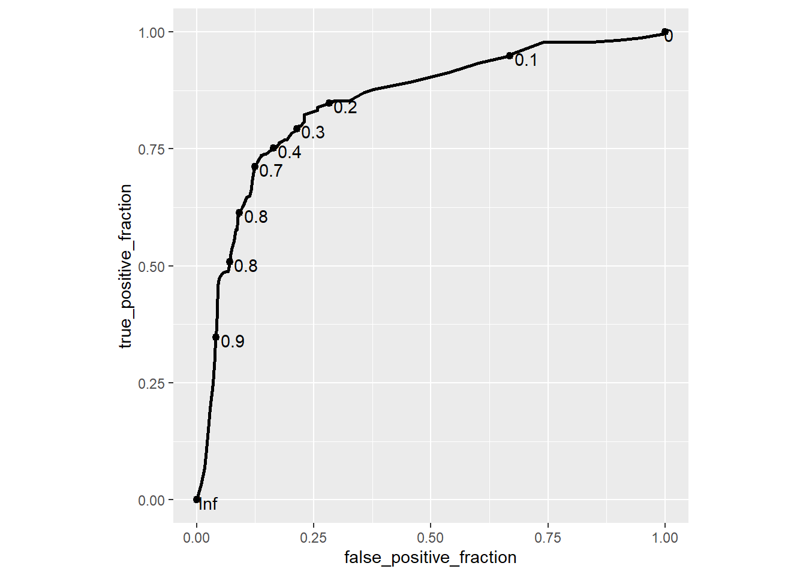

8.5 Gradient Boosting
Boosting is a method to improve (boost) the week learners sequentially and increase the model accuracy with a combined model. There are several boosting algorithms. One of the earliest was AdaBoost (adaptive boost). A more recent innovation is gradient boosting.
Adaboost creates a single split tree (decision stump) then weights the observations by how well the initial tree performed, putting more weight on the difficult observations. It then creates a second tree using the weights so that it focuses on the difficult observations. Observations that are difficult to classify receive increasing larger weights until the algorithm identifies a model that correctly classifies them. The final model returns predictions that are a majority vode. (I think Adaboost applies only to classification problems, not regressions).
Gradient boosting generalizes the AdaBoost method, so that the object is to minimize a loss function. In the case of classification problems, the loss function is the log-loss; for regression problems, the loss function is mean squared error. The regression trees are addative, so that the successive models can be added together to correct the residuals in the earlier models. Gradient boosting constructs its trees in a “greedy” manner, meaning it chooses the best splits based on purity scores like Gini or minimizing the loss. It is common to constrain the weak learners by setting maximum tree size parameters. Gradient boosting continues until it reaches maximum number of trees or an acceptible error level. This can result in overfitting, so it is common to employ regularization methods that penalize aspects of the model.
Tree Constraints. In general the more constrained the tree, the more trees need to be grown. Parameters to optimize include number of trees, tree depth, number of nodes, minimmum observations per split, and minimum improvement to loss.
Learning Rate. Each successive tree can be weighted to slow down the learning rate. Decreasing the learning rate increases the number of required trees. Common growth rates are 0.1 to 0.3.
The gradient boosting algorithm fits a shallow tree \(T_1\) to the data, \(M_1 = T_1\). Then it fits a tree \(T_2\) to the residuals and adds a weighted sum of the tree to the original tree as \(M_2 = M_1 + \gamma T_2\). For regularized boosting, include a learning rate factor \(\eta \in (0..1)\), \(M_2 = M_1 + \eta \gamma T_2\). A larger \(\eta\) produces faster learning, but risks overfitting. The process repeats until the residuals are small enough, or until it reaches the maximum iterations. Because overfitting is a risk, use cross-validation to select the appropriate number of trees (the number of trees producing the lowest RMSE).
8.5.0.1 Gradient Boosting Classification Example
Again using the OJ data set to predict Purchase, this time I’ll use the gradient boosting method by specifying method = "gbm". I’ll use tuneLength = 5 and not worry about tuneGrid anymore. Caret tunes the following hyperparameters (see modelLookup("gbm")).
n.trees: number of boosting iterationsinteraction.depth: maximum tree depthshrinkage: shrinkagen.minobsinnode: mimimum terminal node size
oj.gbm <- train(Purchase ~ .,
data = oj_train,
method = "gbm", # for bagged tree
tuneLength = 5, # choose up to 5 combinations of tuning parameters
metric = "ROC", # evaluate hyperparamter combinations with ROC
trControl = trainControl(
method = "cv", # k-fold cross validation
number = 10, # 10 folds
savePredictions = "final", # save predictions for the optimal tuning parameter1
classProbs = TRUE, # return class probabilities in addition to predicted values
summaryFunction = twoClassSummary # for binary response variable
)
)## Iter TrainDeviance ValidDeviance StepSize Improve
## 1 1.2789 nan 0.1000 0.0273
## 2 1.2286 nan 0.1000 0.0245
## 3 1.1929 nan 0.1000 0.0175
## 4 1.1613 nan 0.1000 0.0148
## 5 1.1263 nan 0.1000 0.0146
## 6 1.0991 nan 0.1000 0.0105
## 7 1.0752 nan 0.1000 0.0102
## 8 1.0579 nan 0.1000 0.0087
## 9 1.0433 nan 0.1000 0.0047
## 10 1.0280 nan 0.1000 0.0082
## 20 0.9233 nan 0.1000 0.0026
## 40 0.8226 nan 0.1000 0.0010
## 60 0.7809 nan 0.1000 -0.0001
## 80 0.7595 nan 0.1000 -0.0002
## 100 0.7506 nan 0.1000 -0.0008
## 120 0.7407 nan 0.1000 -0.0005
## 140 0.7317 nan 0.1000 -0.0005
## 160 0.7277 nan 0.1000 -0.0009
## 180 0.7232 nan 0.1000 -0.0004
## 200 0.7181 nan 0.1000 -0.0007
## 220 0.7115 nan 0.1000 -0.0008
## 240 0.7096 nan 0.1000 -0.0010
## 250 0.7081 nan 0.1000 -0.0015
##
## Iter TrainDeviance ValidDeviance StepSize Improve
## 1 1.2695 nan 0.1000 0.0319
## 2 1.2150 nan 0.1000 0.0260
## 3 1.1702 nan 0.1000 0.0225
## 4 1.1260 nan 0.1000 0.0186
## 5 1.0913 nan 0.1000 0.0147
## 6 1.0586 nan 0.1000 0.0160
## 7 1.0276 nan 0.1000 0.0146
## 8 1.0045 nan 0.1000 0.0109
## 9 0.9836 nan 0.1000 0.0099
## 10 0.9624 nan 0.1000 0.0068
## 20 0.8337 nan 0.1000 0.0027
## 40 0.7525 nan 0.1000 -0.0005
## 60 0.7240 nan 0.1000 -0.0005
## 80 0.7063 nan 0.1000 -0.0006
## 100 0.6879 nan 0.1000 -0.0011
## 120 0.6751 nan 0.1000 -0.0018
## 140 0.6605 nan 0.1000 -0.0012
## 160 0.6477 nan 0.1000 -0.0013
## 180 0.6359 nan 0.1000 -0.0010
## 200 0.6274 nan 0.1000 -0.0018
## 220 0.6166 nan 0.1000 -0.0005
## 240 0.6078 nan 0.1000 -0.0011
## 250 0.6014 nan 0.1000 -0.0019
##
## Iter TrainDeviance ValidDeviance StepSize Improve
## 1 1.2548 nan 0.1000 0.0377
## 2 1.1905 nan 0.1000 0.0294
## 3 1.1343 nan 0.1000 0.0258
## 4 1.0935 nan 0.1000 0.0180
## 5 1.0529 nan 0.1000 0.0168
## 6 1.0172 nan 0.1000 0.0159
## 7 0.9824 nan 0.1000 0.0151
## 8 0.9534 nan 0.1000 0.0127
## 9 0.9277 nan 0.1000 0.0109
## 10 0.9066 nan 0.1000 0.0088
## 20 0.7870 nan 0.1000 0.0023
## 40 0.7150 nan 0.1000 -0.0008
## 60 0.6799 nan 0.1000 -0.0023
## 80 0.6520 nan 0.1000 -0.0012
## 100 0.6298 nan 0.1000 -0.0005
## 120 0.6117 nan 0.1000 -0.0024
## 140 0.5973 nan 0.1000 -0.0016
## 160 0.5849 nan 0.1000 -0.0023
## 180 0.5670 nan 0.1000 -0.0015
## 200 0.5548 nan 0.1000 -0.0006
## 220 0.5440 nan 0.1000 -0.0024
## 240 0.5290 nan 0.1000 -0.0020
## 250 0.5228 nan 0.1000 -0.0016
##
## Iter TrainDeviance ValidDeviance StepSize Improve
## 1 1.2554 nan 0.1000 0.0399
## 2 1.1847 nan 0.1000 0.0346
## 3 1.1321 nan 0.1000 0.0199
## 4 1.0823 nan 0.1000 0.0224
## 5 1.0392 nan 0.1000 0.0208
## 6 1.0067 nan 0.1000 0.0145
## 7 0.9768 nan 0.1000 0.0139
## 8 0.9462 nan 0.1000 0.0123
## 9 0.9238 nan 0.1000 0.0095
## 10 0.8966 nan 0.1000 0.0090
## 20 0.7681 nan 0.1000 0.0007
## 40 0.6937 nan 0.1000 -0.0004
## 60 0.6552 nan 0.1000 -0.0017
## 80 0.6202 nan 0.1000 -0.0018
## 100 0.5887 nan 0.1000 -0.0027
## 120 0.5653 nan 0.1000 -0.0012
## 140 0.5434 nan 0.1000 -0.0017
## 160 0.5275 nan 0.1000 -0.0008
## 180 0.5068 nan 0.1000 -0.0012
## 200 0.4935 nan 0.1000 -0.0016
## 220 0.4801 nan 0.1000 -0.0018
## 240 0.4665 nan 0.1000 -0.0010
## 250 0.4603 nan 0.1000 -0.0012
##
## Iter TrainDeviance ValidDeviance StepSize Improve
## 1 1.2513 nan 0.1000 0.0375
## 2 1.1795 nan 0.1000 0.0320
## 3 1.1264 nan 0.1000 0.0254
## 4 1.0742 nan 0.1000 0.0225
## 5 1.0282 nan 0.1000 0.0196
## 6 0.9888 nan 0.1000 0.0177
## 7 0.9547 nan 0.1000 0.0136
## 8 0.9303 nan 0.1000 0.0103
## 9 0.9008 nan 0.1000 0.0121
## 10 0.8803 nan 0.1000 0.0073
## 20 0.7563 nan 0.1000 0.0003
## 40 0.6715 nan 0.1000 -0.0012
## 60 0.6253 nan 0.1000 -0.0016
## 80 0.5868 nan 0.1000 -0.0021
## 100 0.5538 nan 0.1000 -0.0015
## 120 0.5285 nan 0.1000 -0.0034
## 140 0.5070 nan 0.1000 -0.0025
## 160 0.4872 nan 0.1000 -0.0012
## 180 0.4736 nan 0.1000 -0.0023
## 200 0.4566 nan 0.1000 -0.0015
## 220 0.4407 nan 0.1000 -0.0011
## 240 0.4262 nan 0.1000 -0.0013
## 250 0.4186 nan 0.1000 -0.0024
##
## Iter TrainDeviance ValidDeviance StepSize Improve
## 1 1.2743 nan 0.1000 0.0307
## 2 1.2220 nan 0.1000 0.0240
## 3 1.1885 nan 0.1000 0.0165
## 4 1.1522 nan 0.1000 0.0177
## 5 1.1186 nan 0.1000 0.0136
## 6 1.0912 nan 0.1000 0.0111
## 7 1.0693 nan 0.1000 0.0106
## 8 1.0492 nan 0.1000 0.0089
## 9 1.0309 nan 0.1000 0.0093
## 10 1.0172 nan 0.1000 0.0069
## 20 0.9206 nan 0.1000 0.0030
## 40 0.8357 nan 0.1000 -0.0002
## 60 0.7936 nan 0.1000 -0.0000
## 80 0.7764 nan 0.1000 -0.0009
## 100 0.7682 nan 0.1000 -0.0004
## 120 0.7620 nan 0.1000 -0.0008
## 140 0.7582 nan 0.1000 -0.0011
## 160 0.7536 nan 0.1000 -0.0005
## 180 0.7501 nan 0.1000 -0.0006
## 200 0.7448 nan 0.1000 -0.0008
## 220 0.7409 nan 0.1000 -0.0006
## 240 0.7385 nan 0.1000 -0.0011
## 250 0.7368 nan 0.1000 -0.0007
##
## Iter TrainDeviance ValidDeviance StepSize Improve
## 1 1.2697 nan 0.1000 0.0323
## 2 1.2121 nan 0.1000 0.0276
## 3 1.1636 nan 0.1000 0.0251
## 4 1.1220 nan 0.1000 0.0166
## 5 1.0826 nan 0.1000 0.0131
## 6 1.0537 nan 0.1000 0.0134
## 7 1.0269 nan 0.1000 0.0104
## 8 1.0061 nan 0.1000 0.0084
## 9 0.9858 nan 0.1000 0.0082
## 10 0.9678 nan 0.1000 0.0066
## 20 0.8429 nan 0.1000 0.0024
## 40 0.7685 nan 0.1000 -0.0010
## 60 0.7422 nan 0.1000 -0.0006
## 80 0.7228 nan 0.1000 -0.0009
## 100 0.7073 nan 0.1000 -0.0013
## 120 0.6937 nan 0.1000 -0.0024
## 140 0.6836 nan 0.1000 -0.0014
## 160 0.6703 nan 0.1000 -0.0022
## 180 0.6607 nan 0.1000 -0.0009
## 200 0.6529 nan 0.1000 -0.0011
## 220 0.6438 nan 0.1000 -0.0017
## 240 0.6370 nan 0.1000 -0.0015
## 250 0.6311 nan 0.1000 -0.0011
##
## Iter TrainDeviance ValidDeviance StepSize Improve
## 1 1.2569 nan 0.1000 0.0361
## 2 1.1946 nan 0.1000 0.0301
## 3 1.1386 nan 0.1000 0.0266
## 4 1.0954 nan 0.1000 0.0205
## 5 1.0524 nan 0.1000 0.0204
## 6 1.0186 nan 0.1000 0.0149
## 7 0.9847 nan 0.1000 0.0126
## 8 0.9618 nan 0.1000 0.0086
## 9 0.9344 nan 0.1000 0.0114
## 10 0.9135 nan 0.1000 0.0095
## 20 0.8003 nan 0.1000 0.0027
## 40 0.7353 nan 0.1000 -0.0011
## 60 0.7042 nan 0.1000 -0.0027
## 80 0.6800 nan 0.1000 -0.0017
## 100 0.6602 nan 0.1000 -0.0008
## 120 0.6393 nan 0.1000 -0.0017
## 140 0.6231 nan 0.1000 -0.0016
## 160 0.6077 nan 0.1000 -0.0028
## 180 0.5977 nan 0.1000 -0.0012
## 200 0.5863 nan 0.1000 -0.0014
## 220 0.5749 nan 0.1000 -0.0013
## 240 0.5618 nan 0.1000 -0.0022
## 250 0.5577 nan 0.1000 -0.0022
##
## Iter TrainDeviance ValidDeviance StepSize Improve
## 1 1.2495 nan 0.1000 0.0419
## 2 1.1884 nan 0.1000 0.0265
## 3 1.1279 nan 0.1000 0.0248
## 4 1.0820 nan 0.1000 0.0208
## 5 1.0426 nan 0.1000 0.0166
## 6 1.0089 nan 0.1000 0.0146
## 7 0.9799 nan 0.1000 0.0126
## 8 0.9474 nan 0.1000 0.0140
## 9 0.9225 nan 0.1000 0.0079
## 10 0.9066 nan 0.1000 0.0048
## 20 0.7815 nan 0.1000 0.0014
## 40 0.7028 nan 0.1000 -0.0019
## 60 0.6661 nan 0.1000 -0.0011
## 80 0.6386 nan 0.1000 -0.0006
## 100 0.6075 nan 0.1000 -0.0005
## 120 0.5861 nan 0.1000 -0.0019
## 140 0.5674 nan 0.1000 -0.0020
## 160 0.5467 nan 0.1000 -0.0016
## 180 0.5318 nan 0.1000 -0.0020
## 200 0.5200 nan 0.1000 -0.0025
## 220 0.5050 nan 0.1000 -0.0009
## 240 0.4930 nan 0.1000 -0.0020
## 250 0.4883 nan 0.1000 -0.0016
##
## Iter TrainDeviance ValidDeviance StepSize Improve
## 1 1.2558 nan 0.1000 0.0336
## 2 1.1856 nan 0.1000 0.0326
## 3 1.1172 nan 0.1000 0.0305
## 4 1.0713 nan 0.1000 0.0222
## 5 1.0313 nan 0.1000 0.0171
## 6 0.9965 nan 0.1000 0.0164
## 7 0.9613 nan 0.1000 0.0156
## 8 0.9354 nan 0.1000 0.0103
## 9 0.9089 nan 0.1000 0.0111
## 10 0.8859 nan 0.1000 0.0059
## 20 0.7690 nan 0.1000 0.0006
## 40 0.6889 nan 0.1000 -0.0004
## 60 0.6452 nan 0.1000 -0.0021
## 80 0.6127 nan 0.1000 -0.0021
## 100 0.5811 nan 0.1000 -0.0032
## 120 0.5557 nan 0.1000 -0.0011
## 140 0.5332 nan 0.1000 -0.0012
## 160 0.5118 nan 0.1000 -0.0014
## 180 0.4879 nan 0.1000 -0.0012
## 200 0.4737 nan 0.1000 -0.0020
## 220 0.4591 nan 0.1000 -0.0024
## 240 0.4460 nan 0.1000 -0.0030
## 250 0.4386 nan 0.1000 -0.0013
##
## Iter TrainDeviance ValidDeviance StepSize Improve
## 1 1.2717 nan 0.1000 0.0320
## 2 1.2209 nan 0.1000 0.0250
## 3 1.1751 nan 0.1000 0.0208
## 4 1.1404 nan 0.1000 0.0149
## 5 1.1056 nan 0.1000 0.0119
## 6 1.0782 nan 0.1000 0.0125
## 7 1.0569 nan 0.1000 0.0081
## 8 1.0356 nan 0.1000 0.0098
## 9 1.0176 nan 0.1000 0.0080
## 10 1.0042 nan 0.1000 0.0066
## 20 0.9023 nan 0.1000 0.0021
## 40 0.8156 nan 0.1000 0.0006
## 60 0.7793 nan 0.1000 0.0004
## 80 0.7609 nan 0.1000 -0.0014
## 100 0.7514 nan 0.1000 -0.0006
## 120 0.7448 nan 0.1000 -0.0005
## 140 0.7406 nan 0.1000 -0.0008
## 160 0.7353 nan 0.1000 -0.0007
## 180 0.7329 nan 0.1000 -0.0008
## 200 0.7281 nan 0.1000 -0.0014
## 220 0.7239 nan 0.1000 -0.0008
## 240 0.7211 nan 0.1000 -0.0011
## 250 0.7203 nan 0.1000 -0.0010
##
## Iter TrainDeviance ValidDeviance StepSize Improve
## 1 1.2647 nan 0.1000 0.0368
## 2 1.2060 nan 0.1000 0.0275
## 3 1.1558 nan 0.1000 0.0232
## 4 1.1207 nan 0.1000 0.0178
## 5 1.0787 nan 0.1000 0.0172
## 6 1.0478 nan 0.1000 0.0141
## 7 1.0178 nan 0.1000 0.0117
## 8 0.9963 nan 0.1000 0.0099
## 9 0.9749 nan 0.1000 0.0107
## 10 0.9514 nan 0.1000 0.0095
## 20 0.8341 nan 0.1000 0.0029
## 40 0.7601 nan 0.1000 -0.0015
## 60 0.7335 nan 0.1000 -0.0010
## 80 0.7131 nan 0.1000 -0.0011
## 100 0.7006 nan 0.1000 -0.0018
## 120 0.6886 nan 0.1000 -0.0008
## 140 0.6740 nan 0.1000 -0.0014
## 160 0.6628 nan 0.1000 -0.0017
## 180 0.6522 nan 0.1000 -0.0010
## 200 0.6423 nan 0.1000 -0.0005
## 220 0.6353 nan 0.1000 -0.0020
## 240 0.6251 nan 0.1000 -0.0017
## 250 0.6211 nan 0.1000 -0.0013
##
## Iter TrainDeviance ValidDeviance StepSize Improve
## 1 1.2533 nan 0.1000 0.0369
## 2 1.1914 nan 0.1000 0.0304
## 3 1.1304 nan 0.1000 0.0280
## 4 1.0808 nan 0.1000 0.0214
## 5 1.0411 nan 0.1000 0.0177
## 6 1.0095 nan 0.1000 0.0131
## 7 0.9791 nan 0.1000 0.0118
## 8 0.9487 nan 0.1000 0.0146
## 9 0.9234 nan 0.1000 0.0114
## 10 0.9050 nan 0.1000 0.0081
## 20 0.7868 nan 0.1000 -0.0018
## 40 0.7190 nan 0.1000 -0.0002
## 60 0.6929 nan 0.1000 -0.0013
## 80 0.6706 nan 0.1000 -0.0012
## 100 0.6511 nan 0.1000 -0.0008
## 120 0.6313 nan 0.1000 -0.0028
## 140 0.6161 nan 0.1000 -0.0010
## 160 0.6016 nan 0.1000 -0.0019
## 180 0.5875 nan 0.1000 -0.0013
## 200 0.5754 nan 0.1000 -0.0021
## 220 0.5613 nan 0.1000 -0.0011
## 240 0.5456 nan 0.1000 -0.0014
## 250 0.5423 nan 0.1000 -0.0016
##
## Iter TrainDeviance ValidDeviance StepSize Improve
## 1 1.2526 nan 0.1000 0.0406
## 2 1.1845 nan 0.1000 0.0346
## 3 1.1309 nan 0.1000 0.0246
## 4 1.0809 nan 0.1000 0.0250
## 5 1.0380 nan 0.1000 0.0205
## 6 1.0017 nan 0.1000 0.0164
## 7 0.9661 nan 0.1000 0.0146
## 8 0.9372 nan 0.1000 0.0130
## 9 0.9115 nan 0.1000 0.0105
## 10 0.8921 nan 0.1000 0.0084
## 20 0.7698 nan 0.1000 0.0014
## 40 0.6902 nan 0.1000 -0.0016
## 60 0.6501 nan 0.1000 -0.0019
## 80 0.6200 nan 0.1000 -0.0006
## 100 0.5995 nan 0.1000 -0.0026
## 120 0.5766 nan 0.1000 -0.0019
## 140 0.5576 nan 0.1000 -0.0020
## 160 0.5428 nan 0.1000 -0.0027
## 180 0.5276 nan 0.1000 -0.0026
## 200 0.5091 nan 0.1000 -0.0011
## 220 0.4954 nan 0.1000 -0.0014
## 240 0.4801 nan 0.1000 -0.0028
## 250 0.4748 nan 0.1000 -0.0021
##
## Iter TrainDeviance ValidDeviance StepSize Improve
## 1 1.2578 nan 0.1000 0.0379
## 2 1.1876 nan 0.1000 0.0342
## 3 1.1214 nan 0.1000 0.0297
## 4 1.0650 nan 0.1000 0.0254
## 5 1.0182 nan 0.1000 0.0188
## 6 0.9812 nan 0.1000 0.0172
## 7 0.9484 nan 0.1000 0.0116
## 8 0.9182 nan 0.1000 0.0116
## 9 0.8929 nan 0.1000 0.0068
## 10 0.8704 nan 0.1000 0.0085
## 20 0.7522 nan 0.1000 0.0002
## 40 0.6778 nan 0.1000 -0.0019
## 60 0.6318 nan 0.1000 -0.0015
## 80 0.5982 nan 0.1000 -0.0011
## 100 0.5669 nan 0.1000 -0.0032
## 120 0.5451 nan 0.1000 -0.0012
## 140 0.5224 nan 0.1000 -0.0002
## 160 0.5005 nan 0.1000 -0.0027
## 180 0.4834 nan 0.1000 -0.0015
## 200 0.4693 nan 0.1000 -0.0009
## 220 0.4530 nan 0.1000 -0.0016
## 240 0.4419 nan 0.1000 -0.0035
## 250 0.4324 nan 0.1000 -0.0016
##
## Iter TrainDeviance ValidDeviance StepSize Improve
## 1 1.2761 nan 0.1000 0.0283
## 2 1.2243 nan 0.1000 0.0231
## 3 1.1816 nan 0.1000 0.0192
## 4 1.1477 nan 0.1000 0.0158
## 5 1.1174 nan 0.1000 0.0122
## 6 1.0930 nan 0.1000 0.0116
## 7 1.0704 nan 0.1000 0.0102
## 8 1.0499 nan 0.1000 0.0083
## 9 1.0340 nan 0.1000 0.0078
## 10 1.0167 nan 0.1000 0.0082
## 20 0.9152 nan 0.1000 0.0021
## 40 0.8226 nan 0.1000 0.0007
## 60 0.7895 nan 0.1000 0.0000
## 80 0.7690 nan 0.1000 -0.0008
## 100 0.7612 nan 0.1000 -0.0010
## 120 0.7541 nan 0.1000 -0.0004
## 140 0.7491 nan 0.1000 -0.0012
## 160 0.7443 nan 0.1000 -0.0006
## 180 0.7405 nan 0.1000 -0.0009
## 200 0.7369 nan 0.1000 -0.0009
## 220 0.7329 nan 0.1000 -0.0007
## 240 0.7287 nan 0.1000 -0.0014
## 250 0.7268 nan 0.1000 -0.0011
##
## Iter TrainDeviance ValidDeviance StepSize Improve
## 1 1.2642 nan 0.1000 0.0359
## 2 1.2066 nan 0.1000 0.0279
## 3 1.1624 nan 0.1000 0.0237
## 4 1.1213 nan 0.1000 0.0202
## 5 1.0853 nan 0.1000 0.0162
## 6 1.0560 nan 0.1000 0.0116
## 7 1.0275 nan 0.1000 0.0125
## 8 1.0040 nan 0.1000 0.0109
## 9 0.9823 nan 0.1000 0.0077
## 10 0.9612 nan 0.1000 0.0105
## 20 0.8409 nan 0.1000 0.0026
## 40 0.7578 nan 0.1000 -0.0007
## 60 0.7294 nan 0.1000 -0.0007
## 80 0.7095 nan 0.1000 -0.0026
## 100 0.6965 nan 0.1000 -0.0012
## 120 0.6857 nan 0.1000 -0.0022
## 140 0.6751 nan 0.1000 -0.0004
## 160 0.6650 nan 0.1000 -0.0018
## 180 0.6581 nan 0.1000 -0.0017
## 200 0.6520 nan 0.1000 -0.0009
## 220 0.6436 nan 0.1000 -0.0011
## 240 0.6351 nan 0.1000 -0.0009
## 250 0.6312 nan 0.1000 -0.0016
##
## Iter TrainDeviance ValidDeviance StepSize Improve
## 1 1.2577 nan 0.1000 0.0367
## 2 1.1908 nan 0.1000 0.0288
## 3 1.1314 nan 0.1000 0.0257
## 4 1.0832 nan 0.1000 0.0231
## 5 1.0473 nan 0.1000 0.0147
## 6 1.0104 nan 0.1000 0.0174
## 7 0.9743 nan 0.1000 0.0139
## 8 0.9460 nan 0.1000 0.0113
## 9 0.9236 nan 0.1000 0.0105
## 10 0.9026 nan 0.1000 0.0077
## 20 0.7942 nan 0.1000 0.0009
## 40 0.7292 nan 0.1000 -0.0018
## 60 0.6933 nan 0.1000 -0.0013
## 80 0.6650 nan 0.1000 -0.0008
## 100 0.6458 nan 0.1000 -0.0020
## 120 0.6252 nan 0.1000 -0.0018
## 140 0.6106 nan 0.1000 -0.0010
## 160 0.5953 nan 0.1000 -0.0009
## 180 0.5810 nan 0.1000 -0.0014
## 200 0.5683 nan 0.1000 -0.0016
## 220 0.5544 nan 0.1000 -0.0009
## 240 0.5425 nan 0.1000 -0.0010
## 250 0.5367 nan 0.1000 -0.0012
##
## Iter TrainDeviance ValidDeviance StepSize Improve
## 1 1.2542 nan 0.1000 0.0373
## 2 1.1874 nan 0.1000 0.0310
## 3 1.1277 nan 0.1000 0.0279
## 4 1.0765 nan 0.1000 0.0231
## 5 1.0393 nan 0.1000 0.0179
## 6 1.0012 nan 0.1000 0.0141
## 7 0.9658 nan 0.1000 0.0139
## 8 0.9421 nan 0.1000 0.0101
## 9 0.9187 nan 0.1000 0.0088
## 10 0.8966 nan 0.1000 0.0095
## 20 0.7715 nan 0.1000 0.0019
## 40 0.6966 nan 0.1000 -0.0017
## 60 0.6516 nan 0.1000 -0.0010
## 80 0.6206 nan 0.1000 -0.0015
## 100 0.5991 nan 0.1000 -0.0028
## 120 0.5818 nan 0.1000 -0.0019
## 140 0.5644 nan 0.1000 -0.0018
## 160 0.5476 nan 0.1000 -0.0016
## 180 0.5329 nan 0.1000 -0.0016
## 200 0.5212 nan 0.1000 -0.0016
## 220 0.5055 nan 0.1000 -0.0032
## 240 0.4926 nan 0.1000 -0.0013
## 250 0.4850 nan 0.1000 -0.0006
##
## Iter TrainDeviance ValidDeviance StepSize Improve
## 1 1.2523 nan 0.1000 0.0397
## 2 1.1844 nan 0.1000 0.0301
## 3 1.1269 nan 0.1000 0.0263
## 4 1.0773 nan 0.1000 0.0216
## 5 1.0310 nan 0.1000 0.0211
## 6 0.9902 nan 0.1000 0.0176
## 7 0.9582 nan 0.1000 0.0119
## 8 0.9338 nan 0.1000 0.0106
## 9 0.9054 nan 0.1000 0.0120
## 10 0.8869 nan 0.1000 0.0083
## 20 0.7620 nan 0.1000 -0.0001
## 40 0.6734 nan 0.1000 -0.0010
## 60 0.6333 nan 0.1000 -0.0004
## 80 0.5982 nan 0.1000 -0.0023
## 100 0.5685 nan 0.1000 -0.0013
## 120 0.5436 nan 0.1000 -0.0024
## 140 0.5196 nan 0.1000 -0.0012
## 160 0.5010 nan 0.1000 -0.0031
## 180 0.4832 nan 0.1000 -0.0032
## 200 0.4677 nan 0.1000 -0.0014
## 220 0.4504 nan 0.1000 -0.0016
## 240 0.4333 nan 0.1000 -0.0013
## 250 0.4273 nan 0.1000 -0.0022
##
## Iter TrainDeviance ValidDeviance StepSize Improve
## 1 1.2726 nan 0.1000 0.0321
## 2 1.2186 nan 0.1000 0.0259
## 3 1.1770 nan 0.1000 0.0190
## 4 1.1350 nan 0.1000 0.0186
## 5 1.1017 nan 0.1000 0.0147
## 6 1.0810 nan 0.1000 0.0096
## 7 1.0570 nan 0.1000 0.0105
## 8 1.0375 nan 0.1000 0.0098
## 9 1.0188 nan 0.1000 0.0081
## 10 1.0020 nan 0.1000 0.0072
## 20 0.9034 nan 0.1000 0.0023
## 40 0.8070 nan 0.1000 -0.0001
## 60 0.7671 nan 0.1000 -0.0003
## 80 0.7500 nan 0.1000 -0.0007
## 100 0.7415 nan 0.1000 -0.0008
## 120 0.7349 nan 0.1000 -0.0008
## 140 0.7282 nan 0.1000 -0.0006
## 160 0.7222 nan 0.1000 -0.0006
## 180 0.7190 nan 0.1000 -0.0003
## 200 0.7160 nan 0.1000 -0.0013
## 220 0.7128 nan 0.1000 -0.0008
## 240 0.7092 nan 0.1000 -0.0012
## 250 0.7066 nan 0.1000 -0.0005
##
## Iter TrainDeviance ValidDeviance StepSize Improve
## 1 1.2597 nan 0.1000 0.0362
## 2 1.2019 nan 0.1000 0.0279
## 3 1.1504 nan 0.1000 0.0230
## 4 1.1084 nan 0.1000 0.0168
## 5 1.0702 nan 0.1000 0.0184
## 6 1.0378 nan 0.1000 0.0136
## 7 1.0090 nan 0.1000 0.0131
## 8 0.9848 nan 0.1000 0.0115
## 9 0.9632 nan 0.1000 0.0078
## 10 0.9410 nan 0.1000 0.0094
## 20 0.8215 nan 0.1000 0.0037
## 40 0.7478 nan 0.1000 -0.0001
## 60 0.7184 nan 0.1000 -0.0008
## 80 0.6985 nan 0.1000 -0.0007
## 100 0.6799 nan 0.1000 -0.0013
## 120 0.6660 nan 0.1000 0.0002
## 140 0.6534 nan 0.1000 -0.0009
## 160 0.6423 nan 0.1000 -0.0016
## 180 0.6325 nan 0.1000 -0.0016
## 200 0.6226 nan 0.1000 -0.0011
## 220 0.6139 nan 0.1000 -0.0010
## 240 0.6043 nan 0.1000 -0.0017
## 250 0.6016 nan 0.1000 -0.0012
##
## Iter TrainDeviance ValidDeviance StepSize Improve
## 1 1.2549 nan 0.1000 0.0413
## 2 1.1843 nan 0.1000 0.0345
## 3 1.1274 nan 0.1000 0.0245
## 4 1.0809 nan 0.1000 0.0213
## 5 1.0418 nan 0.1000 0.0178
## 6 1.0056 nan 0.1000 0.0128
## 7 0.9797 nan 0.1000 0.0122
## 8 0.9562 nan 0.1000 0.0083
## 9 0.9288 nan 0.1000 0.0116
## 10 0.9070 nan 0.1000 0.0088
## 20 0.7819 nan 0.1000 0.0013
## 40 0.7119 nan 0.1000 -0.0008
## 60 0.6706 nan 0.1000 -0.0013
## 80 0.6482 nan 0.1000 -0.0018
## 100 0.6271 nan 0.1000 -0.0027
## 120 0.6065 nan 0.1000 -0.0013
## 140 0.5901 nan 0.1000 -0.0021
## 160 0.5709 nan 0.1000 -0.0009
## 180 0.5563 nan 0.1000 -0.0005
## 200 0.5427 nan 0.1000 -0.0025
## 220 0.5333 nan 0.1000 -0.0012
## 240 0.5239 nan 0.1000 -0.0015
## 250 0.5186 nan 0.1000 -0.0018
##
## Iter TrainDeviance ValidDeviance StepSize Improve
## 1 1.2503 nan 0.1000 0.0405
## 2 1.1806 nan 0.1000 0.0343
## 3 1.1211 nan 0.1000 0.0276
## 4 1.0676 nan 0.1000 0.0242
## 5 1.0226 nan 0.1000 0.0193
## 6 0.9842 nan 0.1000 0.0164
## 7 0.9549 nan 0.1000 0.0120
## 8 0.9274 nan 0.1000 0.0125
## 9 0.8994 nan 0.1000 0.0100
## 10 0.8810 nan 0.1000 0.0068
## 20 0.7641 nan 0.1000 0.0015
## 40 0.6902 nan 0.1000 -0.0013
## 60 0.6497 nan 0.1000 -0.0026
## 80 0.6225 nan 0.1000 -0.0020
## 100 0.5898 nan 0.1000 -0.0009
## 120 0.5662 nan 0.1000 -0.0014
## 140 0.5460 nan 0.1000 -0.0015
## 160 0.5293 nan 0.1000 -0.0029
## 180 0.5142 nan 0.1000 -0.0018
## 200 0.5021 nan 0.1000 -0.0021
## 220 0.4850 nan 0.1000 -0.0025
## 240 0.4738 nan 0.1000 -0.0010
## 250 0.4697 nan 0.1000 -0.0025
##
## Iter TrainDeviance ValidDeviance StepSize Improve
## 1 1.2510 nan 0.1000 0.0400
## 2 1.1788 nan 0.1000 0.0356
## 3 1.1185 nan 0.1000 0.0284
## 4 1.0652 nan 0.1000 0.0255
## 5 1.0228 nan 0.1000 0.0209
## 6 0.9819 nan 0.1000 0.0175
## 7 0.9467 nan 0.1000 0.0146
## 8 0.9149 nan 0.1000 0.0133
## 9 0.8872 nan 0.1000 0.0105
## 10 0.8681 nan 0.1000 0.0067
## 20 0.7435 nan 0.1000 0.0013
## 40 0.6620 nan 0.1000 -0.0012
## 60 0.6096 nan 0.1000 -0.0011
## 80 0.5775 nan 0.1000 -0.0017
## 100 0.5491 nan 0.1000 -0.0016
## 120 0.5248 nan 0.1000 -0.0030
## 140 0.5082 nan 0.1000 -0.0016
## 160 0.4873 nan 0.1000 -0.0022
## 180 0.4700 nan 0.1000 -0.0020
## 200 0.4543 nan 0.1000 -0.0013
## 220 0.4388 nan 0.1000 -0.0031
## 240 0.4269 nan 0.1000 -0.0013
## 250 0.4237 nan 0.1000 -0.0015
##
## Iter TrainDeviance ValidDeviance StepSize Improve
## 1 1.2737 nan 0.1000 0.0306
## 2 1.2188 nan 0.1000 0.0241
## 3 1.1752 nan 0.1000 0.0184
## 4 1.1384 nan 0.1000 0.0168
## 5 1.1052 nan 0.1000 0.0134
## 6 1.0800 nan 0.1000 0.0103
## 7 1.0601 nan 0.1000 0.0106
## 8 1.0416 nan 0.1000 0.0097
## 9 1.0234 nan 0.1000 0.0070
## 10 1.0079 nan 0.1000 0.0055
## 20 0.9090 nan 0.1000 0.0034
## 40 0.8145 nan 0.1000 0.0004
## 60 0.7708 nan 0.1000 0.0003
## 80 0.7528 nan 0.1000 -0.0009
## 100 0.7433 nan 0.1000 -0.0010
## 120 0.7366 nan 0.1000 -0.0002
## 140 0.7317 nan 0.1000 -0.0007
## 160 0.7262 nan 0.1000 -0.0009
## 180 0.7217 nan 0.1000 -0.0005
## 200 0.7172 nan 0.1000 -0.0013
## 220 0.7141 nan 0.1000 -0.0012
## 240 0.7102 nan 0.1000 -0.0002
## 250 0.7086 nan 0.1000 -0.0012
##
## Iter TrainDeviance ValidDeviance StepSize Improve
## 1 1.2660 nan 0.1000 0.0361
## 2 1.2076 nan 0.1000 0.0275
## 3 1.1575 nan 0.1000 0.0247
## 4 1.1197 nan 0.1000 0.0178
## 5 1.0845 nan 0.1000 0.0173
## 6 1.0529 nan 0.1000 0.0131
## 7 1.0259 nan 0.1000 0.0123
## 8 0.9969 nan 0.1000 0.0117
## 9 0.9748 nan 0.1000 0.0082
## 10 0.9535 nan 0.1000 0.0076
## 20 0.8305 nan 0.1000 0.0033
## 40 0.7475 nan 0.1000 -0.0002
## 60 0.7207 nan 0.1000 -0.0018
## 80 0.7037 nan 0.1000 -0.0017
## 100 0.6882 nan 0.1000 -0.0014
## 120 0.6802 nan 0.1000 -0.0010
## 140 0.6709 nan 0.1000 -0.0015
## 160 0.6613 nan 0.1000 -0.0014
## 180 0.6523 nan 0.1000 -0.0004
## 200 0.6449 nan 0.1000 -0.0011
## 220 0.6367 nan 0.1000 -0.0014
## 240 0.6286 nan 0.1000 -0.0013
## 250 0.6233 nan 0.1000 -0.0019
##
## Iter TrainDeviance ValidDeviance StepSize Improve
## 1 1.2551 nan 0.1000 0.0346
## 2 1.1931 nan 0.1000 0.0315
## 3 1.1316 nan 0.1000 0.0272
## 4 1.0872 nan 0.1000 0.0204
## 5 1.0437 nan 0.1000 0.0187
## 6 1.0098 nan 0.1000 0.0139
## 7 0.9818 nan 0.1000 0.0107
## 8 0.9579 nan 0.1000 0.0111
## 9 0.9321 nan 0.1000 0.0129
## 10 0.9121 nan 0.1000 0.0066
## 20 0.7838 nan 0.1000 0.0022
## 40 0.7153 nan 0.1000 -0.0001
## 60 0.6832 nan 0.1000 -0.0011
## 80 0.6612 nan 0.1000 -0.0019
## 100 0.6415 nan 0.1000 -0.0020
## 120 0.6252 nan 0.1000 -0.0020
## 140 0.6084 nan 0.1000 -0.0017
## 160 0.5936 nan 0.1000 -0.0009
## 180 0.5834 nan 0.1000 -0.0021
## 200 0.5669 nan 0.1000 -0.0009
## 220 0.5568 nan 0.1000 -0.0011
## 240 0.5467 nan 0.1000 -0.0027
## 250 0.5422 nan 0.1000 -0.0015
##
## Iter TrainDeviance ValidDeviance StepSize Improve
## 1 1.2574 nan 0.1000 0.0391
## 2 1.1858 nan 0.1000 0.0330
## 3 1.1308 nan 0.1000 0.0237
## 4 1.0768 nan 0.1000 0.0205
## 5 1.0311 nan 0.1000 0.0203
## 6 0.9934 nan 0.1000 0.0175
## 7 0.9643 nan 0.1000 0.0121
## 8 0.9342 nan 0.1000 0.0118
## 9 0.9061 nan 0.1000 0.0104
## 10 0.8869 nan 0.1000 0.0078
## 20 0.7608 nan 0.1000 0.0000
## 40 0.6861 nan 0.1000 -0.0012
## 60 0.6452 nan 0.1000 -0.0007
## 80 0.6147 nan 0.1000 -0.0020
## 100 0.5919 nan 0.1000 -0.0015
## 120 0.5685 nan 0.1000 -0.0015
## 140 0.5516 nan 0.1000 -0.0007
## 160 0.5322 nan 0.1000 -0.0024
## 180 0.5188 nan 0.1000 -0.0013
## 200 0.5045 nan 0.1000 -0.0011
## 220 0.4913 nan 0.1000 -0.0012
## 240 0.4791 nan 0.1000 -0.0021
## 250 0.4735 nan 0.1000 -0.0011
##
## Iter TrainDeviance ValidDeviance StepSize Improve
## 1 1.2526 nan 0.1000 0.0413
## 2 1.1759 nan 0.1000 0.0342
## 3 1.1130 nan 0.1000 0.0286
## 4 1.0692 nan 0.1000 0.0198
## 5 1.0244 nan 0.1000 0.0208
## 6 0.9858 nan 0.1000 0.0160
## 7 0.9512 nan 0.1000 0.0156
## 8 0.9230 nan 0.1000 0.0086
## 9 0.8945 nan 0.1000 0.0128
## 10 0.8741 nan 0.1000 0.0071
## 20 0.7489 nan 0.1000 0.0012
## 40 0.6645 nan 0.1000 -0.0017
## 60 0.6174 nan 0.1000 -0.0018
## 80 0.5875 nan 0.1000 -0.0022
## 100 0.5620 nan 0.1000 -0.0009
## 120 0.5374 nan 0.1000 -0.0026
## 140 0.5202 nan 0.1000 -0.0017
## 160 0.5003 nan 0.1000 -0.0014
## 180 0.4829 nan 0.1000 -0.0021
## 200 0.4660 nan 0.1000 -0.0024
## 220 0.4560 nan 0.1000 -0.0024
## 240 0.4425 nan 0.1000 -0.0020
## 250 0.4349 nan 0.1000 -0.0021
##
## Iter TrainDeviance ValidDeviance StepSize Improve
## 1 1.2722 nan 0.1000 0.0322
## 2 1.2256 nan 0.1000 0.0203
## 3 1.1806 nan 0.1000 0.0216
## 4 1.1444 nan 0.1000 0.0179
## 5 1.1141 nan 0.1000 0.0147
## 6 1.0890 nan 0.1000 0.0118
## 7 1.0707 nan 0.1000 0.0085
## 8 1.0493 nan 0.1000 0.0108
## 9 1.0332 nan 0.1000 0.0069
## 10 1.0157 nan 0.1000 0.0086
## 20 0.9131 nan 0.1000 0.0039
## 40 0.8200 nan 0.1000 0.0010
## 60 0.7820 nan 0.1000 0.0004
## 80 0.7654 nan 0.1000 -0.0014
## 100 0.7561 nan 0.1000 -0.0009
## 120 0.7476 nan 0.1000 -0.0011
## 140 0.7412 nan 0.1000 -0.0003
## 160 0.7365 nan 0.1000 -0.0004
## 180 0.7340 nan 0.1000 -0.0005
## 200 0.7299 nan 0.1000 -0.0007
## 220 0.7266 nan 0.1000 -0.0008
## 240 0.7237 nan 0.1000 -0.0008
## 250 0.7234 nan 0.1000 -0.0005
##
## Iter TrainDeviance ValidDeviance StepSize Improve
## 1 1.2651 nan 0.1000 0.0334
## 2 1.2070 nan 0.1000 0.0269
## 3 1.1557 nan 0.1000 0.0231
## 4 1.1153 nan 0.1000 0.0171
## 5 1.0815 nan 0.1000 0.0155
## 6 1.0482 nan 0.1000 0.0152
## 7 1.0172 nan 0.1000 0.0130
## 8 0.9922 nan 0.1000 0.0112
## 9 0.9735 nan 0.1000 0.0078
## 10 0.9545 nan 0.1000 0.0083
## 20 0.8345 nan 0.1000 0.0033
## 40 0.7573 nan 0.1000 -0.0001
## 60 0.7333 nan 0.1000 -0.0011
## 80 0.7105 nan 0.1000 -0.0006
## 100 0.6966 nan 0.1000 -0.0011
## 120 0.6815 nan 0.1000 -0.0012
## 140 0.6641 nan 0.1000 -0.0008
## 160 0.6482 nan 0.1000 -0.0016
## 180 0.6413 nan 0.1000 -0.0012
## 200 0.6329 nan 0.1000 -0.0008
## 220 0.6240 nan 0.1000 -0.0015
## 240 0.6160 nan 0.1000 -0.0011
## 250 0.6111 nan 0.1000 -0.0017
##
## Iter TrainDeviance ValidDeviance StepSize Improve
## 1 1.2637 nan 0.1000 0.0352
## 2 1.1913 nan 0.1000 0.0330
## 3 1.1333 nan 0.1000 0.0254
## 4 1.0844 nan 0.1000 0.0231
## 5 1.0391 nan 0.1000 0.0195
## 6 1.0021 nan 0.1000 0.0152
## 7 0.9729 nan 0.1000 0.0118
## 8 0.9513 nan 0.1000 0.0086
## 9 0.9272 nan 0.1000 0.0096
## 10 0.9064 nan 0.1000 0.0085
## 20 0.7931 nan 0.1000 0.0041
## 40 0.7237 nan 0.1000 -0.0004
## 60 0.6981 nan 0.1000 -0.0012
## 80 0.6718 nan 0.1000 -0.0026
## 100 0.6529 nan 0.1000 -0.0016
## 120 0.6396 nan 0.1000 -0.0010
## 140 0.6233 nan 0.1000 -0.0013
## 160 0.6101 nan 0.1000 -0.0011
## 180 0.5932 nan 0.1000 -0.0015
## 200 0.5794 nan 0.1000 -0.0010
## 220 0.5645 nan 0.1000 -0.0011
## 240 0.5498 nan 0.1000 -0.0018
## 250 0.5448 nan 0.1000 -0.0012
##
## Iter TrainDeviance ValidDeviance StepSize Improve
## 1 1.2583 nan 0.1000 0.0380
## 2 1.1835 nan 0.1000 0.0345
## 3 1.1231 nan 0.1000 0.0268
## 4 1.0730 nan 0.1000 0.0218
## 5 1.0329 nan 0.1000 0.0173
## 6 0.9952 nan 0.1000 0.0161
## 7 0.9630 nan 0.1000 0.0130
## 8 0.9348 nan 0.1000 0.0126
## 9 0.9109 nan 0.1000 0.0108
## 10 0.8940 nan 0.1000 0.0058
## 20 0.7714 nan 0.1000 0.0009
## 40 0.6915 nan 0.1000 -0.0022
## 60 0.6527 nan 0.1000 -0.0006
## 80 0.6232 nan 0.1000 -0.0011
## 100 0.6008 nan 0.1000 -0.0018
## 120 0.5783 nan 0.1000 -0.0017
## 140 0.5562 nan 0.1000 -0.0023
## 160 0.5375 nan 0.1000 -0.0014
## 180 0.5165 nan 0.1000 -0.0019
## 200 0.5043 nan 0.1000 -0.0021
## 220 0.4907 nan 0.1000 -0.0022
## 240 0.4783 nan 0.1000 -0.0019
## 250 0.4728 nan 0.1000 -0.0022
##
## Iter TrainDeviance ValidDeviance StepSize Improve
## 1 1.2435 nan 0.1000 0.0421
## 2 1.1748 nan 0.1000 0.0315
## 3 1.1147 nan 0.1000 0.0294
## 4 1.0672 nan 0.1000 0.0236
## 5 1.0265 nan 0.1000 0.0188
## 6 0.9873 nan 0.1000 0.0165
## 7 0.9555 nan 0.1000 0.0151
## 8 0.9289 nan 0.1000 0.0100
## 9 0.9030 nan 0.1000 0.0085
## 10 0.8836 nan 0.1000 0.0077
## 20 0.7615 nan 0.1000 0.0016
## 40 0.6861 nan 0.1000 -0.0016
## 60 0.6393 nan 0.1000 -0.0017
## 80 0.6022 nan 0.1000 -0.0021
## 100 0.5787 nan 0.1000 -0.0023
## 120 0.5532 nan 0.1000 -0.0024
## 140 0.5303 nan 0.1000 -0.0017
## 160 0.5079 nan 0.1000 -0.0015
## 180 0.4894 nan 0.1000 -0.0017
## 200 0.4716 nan 0.1000 -0.0019
## 220 0.4537 nan 0.1000 -0.0017
## 240 0.4389 nan 0.1000 -0.0007
## 250 0.4327 nan 0.1000 -0.0013
##
## Iter TrainDeviance ValidDeviance StepSize Improve
## 1 1.2786 nan 0.1000 0.0297
## 2 1.2244 nan 0.1000 0.0249
## 3 1.1873 nan 0.1000 0.0203
## 4 1.1524 nan 0.1000 0.0140
## 5 1.1216 nan 0.1000 0.0141
## 6 1.0961 nan 0.1000 0.0125
## 7 1.0730 nan 0.1000 0.0103
## 8 1.0536 nan 0.1000 0.0086
## 9 1.0376 nan 0.1000 0.0067
## 10 1.0208 nan 0.1000 0.0083
## 20 0.9191 nan 0.1000 0.0025
## 40 0.8304 nan 0.1000 0.0006
## 60 0.7967 nan 0.1000 -0.0009
## 80 0.7809 nan 0.1000 -0.0007
## 100 0.7724 nan 0.1000 -0.0012
## 120 0.7661 nan 0.1000 -0.0004
## 140 0.7613 nan 0.1000 -0.0012
## 160 0.7558 nan 0.1000 -0.0004
## 180 0.7511 nan 0.1000 -0.0004
## 200 0.7460 nan 0.1000 -0.0006
## 220 0.7421 nan 0.1000 -0.0013
## 240 0.7388 nan 0.1000 -0.0007
## 250 0.7365 nan 0.1000 -0.0009
##
## Iter TrainDeviance ValidDeviance StepSize Improve
## 1 1.2662 nan 0.1000 0.0324
## 2 1.2096 nan 0.1000 0.0223
## 3 1.1565 nan 0.1000 0.0234
## 4 1.1199 nan 0.1000 0.0184
## 5 1.0844 nan 0.1000 0.0144
## 6 1.0520 nan 0.1000 0.0153
## 7 1.0254 nan 0.1000 0.0130
## 8 1.0023 nan 0.1000 0.0091
## 9 0.9789 nan 0.1000 0.0100
## 10 0.9608 nan 0.1000 0.0074
## 20 0.8450 nan 0.1000 0.0015
## 40 0.7728 nan 0.1000 -0.0010
## 60 0.7478 nan 0.1000 -0.0011
## 80 0.7312 nan 0.1000 -0.0005
## 100 0.7193 nan 0.1000 -0.0008
## 120 0.7053 nan 0.1000 -0.0015
## 140 0.6952 nan 0.1000 -0.0006
## 160 0.6855 nan 0.1000 -0.0007
## 180 0.6758 nan 0.1000 -0.0013
## 200 0.6663 nan 0.1000 -0.0011
## 220 0.6599 nan 0.1000 -0.0008
## 240 0.6511 nan 0.1000 -0.0015
## 250 0.6471 nan 0.1000 -0.0012
##
## Iter TrainDeviance ValidDeviance StepSize Improve
## 1 1.2605 nan 0.1000 0.0359
## 2 1.1990 nan 0.1000 0.0295
## 3 1.1393 nan 0.1000 0.0250
## 4 1.0933 nan 0.1000 0.0198
## 5 1.0564 nan 0.1000 0.0142
## 6 1.0189 nan 0.1000 0.0153
## 7 0.9922 nan 0.1000 0.0114
## 8 0.9677 nan 0.1000 0.0095
## 9 0.9451 nan 0.1000 0.0105
## 10 0.9247 nan 0.1000 0.0070
## 20 0.8103 nan 0.1000 0.0028
## 40 0.7386 nan 0.1000 -0.0008
## 60 0.7043 nan 0.1000 -0.0029
## 80 0.6768 nan 0.1000 -0.0006
## 100 0.6509 nan 0.1000 -0.0012
## 120 0.6340 nan 0.1000 -0.0015
## 140 0.6159 nan 0.1000 -0.0020
## 160 0.6042 nan 0.1000 -0.0015
## 180 0.5892 nan 0.1000 -0.0009
## 200 0.5800 nan 0.1000 -0.0015
## 220 0.5693 nan 0.1000 -0.0015
## 240 0.5583 nan 0.1000 -0.0014
## 250 0.5545 nan 0.1000 -0.0009
##
## Iter TrainDeviance ValidDeviance StepSize Improve
## 1 1.2535 nan 0.1000 0.0373
## 2 1.1854 nan 0.1000 0.0315
## 3 1.1321 nan 0.1000 0.0243
## 4 1.0809 nan 0.1000 0.0232
## 5 1.0425 nan 0.1000 0.0193
## 6 1.0039 nan 0.1000 0.0155
## 7 0.9741 nan 0.1000 0.0124
## 8 0.9470 nan 0.1000 0.0120
## 9 0.9198 nan 0.1000 0.0119
## 10 0.9026 nan 0.1000 0.0068
## 20 0.7913 nan 0.1000 0.0012
## 40 0.7186 nan 0.1000 -0.0003
## 60 0.6837 nan 0.1000 -0.0016
## 80 0.6483 nan 0.1000 -0.0009
## 100 0.6236 nan 0.1000 -0.0014
## 120 0.5982 nan 0.1000 -0.0024
## 140 0.5790 nan 0.1000 -0.0015
## 160 0.5596 nan 0.1000 -0.0035
## 180 0.5411 nan 0.1000 -0.0007
## 200 0.5267 nan 0.1000 -0.0020
## 220 0.5139 nan 0.1000 -0.0012
## 240 0.4973 nan 0.1000 -0.0021
## 250 0.4919 nan 0.1000 -0.0009
##
## Iter TrainDeviance ValidDeviance StepSize Improve
## 1 1.2535 nan 0.1000 0.0388
## 2 1.1840 nan 0.1000 0.0318
## 3 1.1232 nan 0.1000 0.0262
## 4 1.0698 nan 0.1000 0.0244
## 5 1.0285 nan 0.1000 0.0185
## 6 0.9955 nan 0.1000 0.0134
## 7 0.9661 nan 0.1000 0.0146
## 8 0.9362 nan 0.1000 0.0139
## 9 0.9138 nan 0.1000 0.0090
## 10 0.8958 nan 0.1000 0.0069
## 20 0.7770 nan 0.1000 0.0004
## 40 0.7015 nan 0.1000 -0.0011
## 60 0.6610 nan 0.1000 -0.0024
## 80 0.6300 nan 0.1000 -0.0035
## 100 0.5995 nan 0.1000 -0.0016
## 120 0.5673 nan 0.1000 -0.0024
## 140 0.5459 nan 0.1000 -0.0038
## 160 0.5245 nan 0.1000 -0.0029
## 180 0.5053 nan 0.1000 -0.0016
## 200 0.4902 nan 0.1000 -0.0012
## 220 0.4748 nan 0.1000 -0.0026
## 240 0.4577 nan 0.1000 -0.0022
## 250 0.4513 nan 0.1000 -0.0027
##
## Iter TrainDeviance ValidDeviance StepSize Improve
## 1 1.2725 nan 0.1000 0.0315
## 2 1.2219 nan 0.1000 0.0246
## 3 1.1809 nan 0.1000 0.0195
## 4 1.1501 nan 0.1000 0.0136
## 5 1.1172 nan 0.1000 0.0151
## 6 1.0930 nan 0.1000 0.0122
## 7 1.0669 nan 0.1000 0.0116
## 8 1.0449 nan 0.1000 0.0093
## 9 1.0285 nan 0.1000 0.0066
## 10 1.0180 nan 0.1000 0.0038
## 20 0.9148 nan 0.1000 0.0024
## 40 0.8255 nan 0.1000 -0.0002
## 60 0.7874 nan 0.1000 0.0005
## 80 0.7699 nan 0.1000 -0.0002
## 100 0.7627 nan 0.1000 -0.0013
## 120 0.7552 nan 0.1000 -0.0003
## 140 0.7490 nan 0.1000 -0.0009
## 160 0.7430 nan 0.1000 -0.0010
## 180 0.7382 nan 0.1000 -0.0008
## 200 0.7349 nan 0.1000 -0.0005
## 220 0.7314 nan 0.1000 -0.0013
## 240 0.7268 nan 0.1000 -0.0007
## 250 0.7253 nan 0.1000 -0.0006
##
## Iter TrainDeviance ValidDeviance StepSize Improve
## 1 1.2623 nan 0.1000 0.0345
## 2 1.2026 nan 0.1000 0.0294
## 3 1.1548 nan 0.1000 0.0218
## 4 1.1129 nan 0.1000 0.0177
## 5 1.0812 nan 0.1000 0.0157
## 6 1.0509 nan 0.1000 0.0147
## 7 1.0280 nan 0.1000 0.0099
## 8 1.0037 nan 0.1000 0.0104
## 9 0.9810 nan 0.1000 0.0097
## 10 0.9609 nan 0.1000 0.0089
## 20 0.8459 nan 0.1000 0.0019
## 40 0.7693 nan 0.1000 -0.0002
## 60 0.7363 nan 0.1000 -0.0008
## 80 0.7162 nan 0.1000 -0.0023
## 100 0.7052 nan 0.1000 -0.0015
## 120 0.6917 nan 0.1000 -0.0028
## 140 0.6756 nan 0.1000 -0.0020
## 160 0.6652 nan 0.1000 -0.0003
## 180 0.6557 nan 0.1000 -0.0014
## 200 0.6468 nan 0.1000 -0.0006
## 220 0.6353 nan 0.1000 -0.0006
## 240 0.6277 nan 0.1000 -0.0007
## 250 0.6244 nan 0.1000 -0.0011
##
## Iter TrainDeviance ValidDeviance StepSize Improve
## 1 1.2566 nan 0.1000 0.0386
## 2 1.1937 nan 0.1000 0.0297
## 3 1.1355 nan 0.1000 0.0258
## 4 1.0909 nan 0.1000 0.0201
## 5 1.0509 nan 0.1000 0.0179
## 6 1.0145 nan 0.1000 0.0162
## 7 0.9840 nan 0.1000 0.0123
## 8 0.9551 nan 0.1000 0.0122
## 9 0.9369 nan 0.1000 0.0088
## 10 0.9164 nan 0.1000 0.0072
## 20 0.8017 nan 0.1000 0.0007
## 40 0.7255 nan 0.1000 -0.0002
## 60 0.6940 nan 0.1000 -0.0009
## 80 0.6684 nan 0.1000 -0.0008
## 100 0.6504 nan 0.1000 -0.0011
## 120 0.6325 nan 0.1000 -0.0013
## 140 0.6140 nan 0.1000 -0.0013
## 160 0.5974 nan 0.1000 -0.0002
## 180 0.5833 nan 0.1000 -0.0010
## 200 0.5666 nan 0.1000 -0.0011
## 220 0.5550 nan 0.1000 -0.0020
## 240 0.5451 nan 0.1000 -0.0023
## 250 0.5372 nan 0.1000 -0.0015
##
## Iter TrainDeviance ValidDeviance StepSize Improve
## 1 1.2498 nan 0.1000 0.0417
## 2 1.1832 nan 0.1000 0.0281
## 3 1.1271 nan 0.1000 0.0244
## 4 1.0777 nan 0.1000 0.0218
## 5 1.0407 nan 0.1000 0.0151
## 6 1.0058 nan 0.1000 0.0141
## 7 0.9753 nan 0.1000 0.0148
## 8 0.9445 nan 0.1000 0.0133
## 9 0.9192 nan 0.1000 0.0115
## 10 0.9036 nan 0.1000 0.0060
## 20 0.7800 nan 0.1000 0.0017
## 40 0.7027 nan 0.1000 -0.0018
## 60 0.6571 nan 0.1000 -0.0015
## 80 0.6285 nan 0.1000 -0.0028
## 100 0.6088 nan 0.1000 -0.0028
## 120 0.5816 nan 0.1000 -0.0033
## 140 0.5649 nan 0.1000 -0.0020
## 160 0.5430 nan 0.1000 -0.0012
## 180 0.5294 nan 0.1000 -0.0016
## 200 0.5109 nan 0.1000 -0.0021
## 220 0.4943 nan 0.1000 -0.0027
## 240 0.4793 nan 0.1000 -0.0010
## 250 0.4732 nan 0.1000 -0.0016
##
## Iter TrainDeviance ValidDeviance StepSize Improve
## 1 1.2514 nan 0.1000 0.0374
## 2 1.1825 nan 0.1000 0.0323
## 3 1.1249 nan 0.1000 0.0244
## 4 1.0758 nan 0.1000 0.0248
## 5 1.0288 nan 0.1000 0.0205
## 6 0.9950 nan 0.1000 0.0151
## 7 0.9607 nan 0.1000 0.0120
## 8 0.9307 nan 0.1000 0.0132
## 9 0.9071 nan 0.1000 0.0100
## 10 0.8828 nan 0.1000 0.0094
## 20 0.7598 nan 0.1000 0.0013
## 40 0.6744 nan 0.1000 -0.0017
## 60 0.6343 nan 0.1000 -0.0018
## 80 0.5947 nan 0.1000 -0.0013
## 100 0.5667 nan 0.1000 -0.0019
## 120 0.5457 nan 0.1000 -0.0029
## 140 0.5235 nan 0.1000 -0.0024
## 160 0.5036 nan 0.1000 -0.0019
## 180 0.4856 nan 0.1000 -0.0030
## 200 0.4678 nan 0.1000 -0.0020
## 220 0.4534 nan 0.1000 -0.0023
## 240 0.4412 nan 0.1000 -0.0018
## 250 0.4336 nan 0.1000 -0.0019
##
## Iter TrainDeviance ValidDeviance StepSize Improve
## 1 1.2803 nan 0.1000 0.0300
## 2 1.2282 nan 0.1000 0.0252
## 3 1.1859 nan 0.1000 0.0212
## 4 1.1515 nan 0.1000 0.0150
## 5 1.1195 nan 0.1000 0.0146
## 6 1.0928 nan 0.1000 0.0127
## 7 1.0679 nan 0.1000 0.0107
## 8 1.0480 nan 0.1000 0.0092
## 9 1.0320 nan 0.1000 0.0078
## 10 1.0185 nan 0.1000 0.0060
## 20 0.9144 nan 0.1000 0.0035
## 40 0.8227 nan 0.1000 0.0009
## 60 0.7776 nan 0.1000 -0.0003
## 80 0.7595 nan 0.1000 -0.0005
## 100 0.7498 nan 0.1000 -0.0002
## 120 0.7441 nan 0.1000 -0.0002
## 140 0.7392 nan 0.1000 -0.0006
## 160 0.7347 nan 0.1000 -0.0004
## 180 0.7323 nan 0.1000 -0.0013
## 200 0.7259 nan 0.1000 -0.0003
## 220 0.7226 nan 0.1000 -0.0003
## 240 0.7204 nan 0.1000 -0.0004
## 250 0.7180 nan 0.1000 -0.0010
##
## Iter TrainDeviance ValidDeviance StepSize Improve
## 1 1.2639 nan 0.1000 0.0365
## 2 1.2041 nan 0.1000 0.0277
## 3 1.1555 nan 0.1000 0.0224
## 4 1.1135 nan 0.1000 0.0190
## 5 1.0741 nan 0.1000 0.0174
## 6 1.0444 nan 0.1000 0.0128
## 7 1.0172 nan 0.1000 0.0120
## 8 0.9928 nan 0.1000 0.0114
## 9 0.9698 nan 0.1000 0.0105
## 10 0.9523 nan 0.1000 0.0071
## 20 0.8290 nan 0.1000 0.0023
## 40 0.7563 nan 0.1000 -0.0012
## 60 0.7274 nan 0.1000 -0.0011
## 80 0.7078 nan 0.1000 -0.0014
## 100 0.6940 nan 0.1000 -0.0008
## 120 0.6795 nan 0.1000 -0.0015
## 140 0.6698 nan 0.1000 -0.0008
## 160 0.6585 nan 0.1000 -0.0011
## 180 0.6453 nan 0.1000 -0.0002
## 200 0.6358 nan 0.1000 -0.0007
## 220 0.6313 nan 0.1000 -0.0019
## 240 0.6263 nan 0.1000 -0.0020
## 250 0.6222 nan 0.1000 -0.0013
##
## Iter TrainDeviance ValidDeviance StepSize Improve
## 1 1.2566 nan 0.1000 0.0352
## 2 1.1939 nan 0.1000 0.0309
## 3 1.1369 nan 0.1000 0.0252
## 4 1.0871 nan 0.1000 0.0217
## 5 1.0427 nan 0.1000 0.0188
## 6 1.0083 nan 0.1000 0.0132
## 7 0.9772 nan 0.1000 0.0138
## 8 0.9496 nan 0.1000 0.0146
## 9 0.9264 nan 0.1000 0.0103
## 10 0.9027 nan 0.1000 0.0097
## 20 0.7804 nan 0.1000 0.0026
## 40 0.7150 nan 0.1000 -0.0014
## 60 0.6814 nan 0.1000 -0.0023
## 80 0.6575 nan 0.1000 -0.0021
## 100 0.6395 nan 0.1000 -0.0021
## 120 0.6198 nan 0.1000 -0.0014
## 140 0.6030 nan 0.1000 -0.0016
## 160 0.5852 nan 0.1000 -0.0013
## 180 0.5747 nan 0.1000 -0.0017
## 200 0.5616 nan 0.1000 -0.0014
## 220 0.5461 nan 0.1000 -0.0019
## 240 0.5350 nan 0.1000 -0.0025
## 250 0.5289 nan 0.1000 -0.0008
##
## Iter TrainDeviance ValidDeviance StepSize Improve
## 1 1.2508 nan 0.1000 0.0399
## 2 1.1799 nan 0.1000 0.0327
## 3 1.1202 nan 0.1000 0.0267
## 4 1.0681 nan 0.1000 0.0230
## 5 1.0267 nan 0.1000 0.0188
## 6 0.9903 nan 0.1000 0.0144
## 7 0.9579 nan 0.1000 0.0146
## 8 0.9311 nan 0.1000 0.0122
## 9 0.9093 nan 0.1000 0.0100
## 10 0.8920 nan 0.1000 0.0071
## 20 0.7669 nan 0.1000 0.0027
## 40 0.6912 nan 0.1000 -0.0021
## 60 0.6458 nan 0.1000 -0.0026
## 80 0.6124 nan 0.1000 -0.0004
## 100 0.5870 nan 0.1000 -0.0014
## 120 0.5656 nan 0.1000 -0.0013
## 140 0.5518 nan 0.1000 -0.0023
## 160 0.5341 nan 0.1000 -0.0011
## 180 0.5194 nan 0.1000 -0.0010
## 200 0.5076 nan 0.1000 -0.0026
## 220 0.4978 nan 0.1000 -0.0018
## 240 0.4803 nan 0.1000 -0.0012
## 250 0.4720 nan 0.1000 -0.0022
##
## Iter TrainDeviance ValidDeviance StepSize Improve
## 1 1.2479 nan 0.1000 0.0415
## 2 1.1762 nan 0.1000 0.0296
## 3 1.1123 nan 0.1000 0.0268
## 4 1.0657 nan 0.1000 0.0197
## 5 1.0210 nan 0.1000 0.0199
## 6 0.9815 nan 0.1000 0.0159
## 7 0.9479 nan 0.1000 0.0105
## 8 0.9197 nan 0.1000 0.0126
## 9 0.8955 nan 0.1000 0.0088
## 10 0.8742 nan 0.1000 0.0090
## 20 0.7586 nan 0.1000 0.0012
## 40 0.6843 nan 0.1000 -0.0018
## 60 0.6355 nan 0.1000 -0.0027
## 80 0.5939 nan 0.1000 -0.0014
## 100 0.5648 nan 0.1000 -0.0014
## 120 0.5434 nan 0.1000 -0.0016
## 140 0.5223 nan 0.1000 -0.0021
## 160 0.5026 nan 0.1000 -0.0021
## 180 0.4889 nan 0.1000 -0.0021
## 200 0.4758 nan 0.1000 -0.0012
## 220 0.4520 nan 0.1000 -0.0008
## 240 0.4417 nan 0.1000 -0.0027
## 250 0.4358 nan 0.1000 -0.0023
##
## Iter TrainDeviance ValidDeviance StepSize Improve
## 1 1.2643 nan 0.1000 0.0332
## 2 1.2100 nan 0.1000 0.0272
## 3 1.1593 nan 0.1000 0.0240
## 4 1.1180 nan 0.1000 0.0196
## 5 1.0825 nan 0.1000 0.0170
## 6 1.0508 nan 0.1000 0.0135
## 7 1.0219 nan 0.1000 0.0112
## 8 0.9984 nan 0.1000 0.0118
## 9 0.9778 nan 0.1000 0.0072
## 10 0.9565 nan 0.1000 0.0096
## 20 0.8389 nan 0.1000 0.0025
## 40 0.7624 nan 0.1000 -0.0009
## 50 0.7453 nan 0.1000 -0.0006## Stochastic Gradient Boosting
##
## 857 samples
## 17 predictor
## 2 classes: 'CH', 'MM'
##
## No pre-processing
## Resampling: Cross-Validated (10 fold)
## Summary of sample sizes: 772, 770, 771, 771, 772, 771, ...
## Resampling results across tuning parameters:
##
## interaction.depth n.trees ROC Sens Spec
## 1 50 0.8869715 0.8720247 0.7245098
## 1 100 0.8889466 0.8738389 0.7302139
## 1 150 0.8850612 0.8680697 0.7303030
## 1 200 0.8838868 0.8738026 0.7213012
## 1 250 0.8805090 0.8622642 0.7275401
## 2 50 0.8895139 0.8719521 0.7451872
## 2 100 0.8832208 0.8623367 0.7334225
## 2 150 0.8838687 0.8679971 0.7394831
## 2 200 0.8811028 0.8642598 0.7245989
## 2 250 0.8780432 0.8489840 0.7336898
## 3 50 0.8833620 0.8700290 0.7245989
## 3 100 0.8785063 0.8604862 0.7454545
## 3 150 0.8744782 0.8470972 0.7156863
## 3 200 0.8723217 0.8414731 0.7246881
## 3 250 0.8722653 0.8337446 0.7217469
## 4 50 0.8854180 0.8604862 0.7605169
## 4 100 0.8794721 0.8413280 0.7336898
## 4 150 0.8741609 0.8432511 0.7308378
## 4 200 0.8710638 0.8470972 0.7249554
## 4 250 0.8674771 0.8490203 0.7218360
## 5 50 0.8868076 0.8585994 0.7574866
## 5 100 0.8786285 0.8471698 0.7486631
## 5 150 0.8708328 0.8395138 0.7458111
## 5 200 0.8648622 0.8452467 0.7455437
## 5 250 0.8594578 0.8375544 0.7336007
##
## Tuning parameter 'shrinkage' was held constant at a value of 0.1
##
## Tuning parameter 'n.minobsinnode' was held constant at a value of 10
## ROC was used to select the optimal model using the largest value.
## The final values used for the model were n.trees = 50, interaction.depth
## = 2, shrinkage = 0.1 and n.minobsinnode = 10.
oj.pred <- predict(oj.gbm, oj_test, type = "raw")
plot(oj_test$Purchase, oj.pred,
main = "Gradient Boosing Classification: Predicted vs. Actual",
xlab = "Actual",
ylab = "Predicted")## Confusion Matrix and Statistics
##
## Reference
## Prediction CH MM
## CH 117 18
## MM 13 65
##
## Accuracy : 0.8545
## 95% CI : (0.7998, 0.8989)
## No Information Rate : 0.6103
## P-Value [Acc > NIR] : 4.83e-15
##
## Kappa : 0.6907
##
## Mcnemar's Test P-Value : 0.4725
##
## Sensitivity : 0.9000
## Specificity : 0.7831
## Pos Pred Value : 0.8667
## Neg Pred Value : 0.8333
## Prevalence : 0.6103
## Detection Rate : 0.5493
## Detection Prevalence : 0.6338
## Balanced Accuracy : 0.8416
##
## 'Positive' Class : CH
## 8.5.0.2 Gradient Boosting Regression Example
Again using the Carseats data set to predict Sales, this time I’ll use the gradient boosting method by specifying method = "gbm". I’ll use tuneLength = 5 and not worry about tuneGrid anymore. Caret tunes the following hyperparameters.
n.trees: number of boosting iterations (increasingn.treesreduces the error on training set, but may lead to over-fitting)interaction.depth: maximum tree depth (the default six - node tree appears to do an excellent job)shrinkage: learning rate (reduces the impact of each additional fitted base-learner (tree) by reducing the size of incremental steps and thus penalizes the importance of each consecutive iteration. The intuition is that it is better to improve a model by taking many small steps than by taking fewer large steps. If one of the boosting iterations turns out to be erroneous, its negative impact can be easily corrected in subsequent steps.)n.minobsinnode: mimimum terminal node size
carseats.gbm <- train(Sales ~ .,
data = carseats_train,
method = "gbm", # for bagged tree
tuneLength = 5, # choose up to 5 combinations of tuning parameters
metric = "RMSE", # evaluate hyperparamter combinations with ROC
trControl = trainControl(
method = "cv", # k-fold cross validation
number = 10, # 10 folds
savePredictions = "final", # save predictions for the optimal tuning parameter1
verboseIter = FALSE,
returnData = FALSE
)
)## Iter TrainDeviance ValidDeviance StepSize Improve
## 1 7.6155 nan 0.1000 0.3126
## 2 7.3677 nan 0.1000 0.2471
## 3 7.1383 nan 0.1000 0.1559
## 4 6.8796 nan 0.1000 0.3000
## 5 6.6084 nan 0.1000 0.2696
## 6 6.3846 nan 0.1000 0.1575
## 7 6.1551 nan 0.1000 0.2016
## 8 5.9837 nan 0.1000 0.1171
## 9 5.7969 nan 0.1000 0.1558
## 10 5.6503 nan 0.1000 0.1243
## 20 4.5758 nan 0.1000 0.0472
## 40 3.3276 nan 0.1000 0.0043
## 60 2.6161 nan 0.1000 0.0154
## 80 2.1215 nan 0.1000 -0.0029
## 100 1.7822 nan 0.1000 -0.0166
## 120 1.5354 nan 0.1000 -0.0016
## 140 1.3313 nan 0.1000 0.0067
## 160 1.2074 nan 0.1000 -0.0030
## 180 1.0966 nan 0.1000 0.0005
## 200 1.0083 nan 0.1000 -0.0019
## 220 0.9572 nan 0.1000 -0.0008
## 240 0.9048 nan 0.1000 -0.0052
## 250 0.8922 nan 0.1000 -0.0051
##
## Iter TrainDeviance ValidDeviance StepSize Improve
## 1 7.4939 nan 0.1000 0.5303
## 2 6.9609 nan 0.1000 0.4503
## 3 6.5646 nan 0.1000 0.3312
## 4 6.2135 nan 0.1000 0.2836
## 5 5.9347 nan 0.1000 0.2472
## 6 5.6654 nan 0.1000 0.2045
## 7 5.3757 nan 0.1000 0.2134
## 8 5.1883 nan 0.1000 0.1810
## 9 5.0431 nan 0.1000 0.1205
## 10 4.8440 nan 0.1000 0.0749
## 20 3.4421 nan 0.1000 0.1291
## 40 2.0285 nan 0.1000 0.0246
## 60 1.4136 nan 0.1000 0.0003
## 80 1.0839 nan 0.1000 0.0003
## 100 0.9011 nan 0.1000 0.0052
## 120 0.8195 nan 0.1000 -0.0075
## 140 0.7664 nan 0.1000 -0.0036
## 160 0.7243 nan 0.1000 -0.0010
## 180 0.6839 nan 0.1000 -0.0028
## 200 0.6448 nan 0.1000 -0.0048
## 220 0.6123 nan 0.1000 -0.0035
## 240 0.5897 nan 0.1000 -0.0038
## 250 0.5767 nan 0.1000 -0.0050
##
## Iter TrainDeviance ValidDeviance StepSize Improve
## 1 7.3122 nan 0.1000 0.5956
## 2 6.7737 nan 0.1000 0.4295
## 3 6.3033 nan 0.1000 0.4215
## 4 5.9081 nan 0.1000 0.2966
## 5 5.5342 nan 0.1000 0.3320
## 6 5.1666 nan 0.1000 0.2748
## 7 4.9365 nan 0.1000 0.1688
## 8 4.6557 nan 0.1000 0.2144
## 9 4.4412 nan 0.1000 0.1072
## 10 4.2075 nan 0.1000 0.1861
## 20 2.7722 nan 0.1000 0.0107
## 40 1.4659 nan 0.1000 0.0203
## 60 1.0163 nan 0.1000 -0.0055
## 80 0.8430 nan 0.1000 -0.0074
## 100 0.7427 nan 0.1000 -0.0031
## 120 0.6731 nan 0.1000 -0.0078
## 140 0.6151 nan 0.1000 -0.0080
## 160 0.5814 nan 0.1000 -0.0074
## 180 0.5452 nan 0.1000 -0.0054
## 200 0.5023 nan 0.1000 -0.0071
## 220 0.4697 nan 0.1000 -0.0058
## 240 0.4340 nan 0.1000 -0.0022
## 250 0.4207 nan 0.1000 -0.0088
##
## Iter TrainDeviance ValidDeviance StepSize Improve
## 1 7.3508 nan 0.1000 0.7012
## 2 6.7011 nan 0.1000 0.5533
## 3 6.1585 nan 0.1000 0.5138
## 4 5.7274 nan 0.1000 0.3542
## 5 5.2438 nan 0.1000 0.3597
## 6 4.9357 nan 0.1000 0.2545
## 7 4.6359 nan 0.1000 0.2195
## 8 4.3960 nan 0.1000 0.2294
## 9 4.1786 nan 0.1000 0.1539
## 10 3.9850 nan 0.1000 0.1414
## 20 2.4927 nan 0.1000 0.0532
## 40 1.2882 nan 0.1000 0.0112
## 60 0.8551 nan 0.1000 -0.0074
## 80 0.6752 nan 0.1000 -0.0044
## 100 0.5795 nan 0.1000 -0.0097
## 120 0.4983 nan 0.1000 -0.0038
## 140 0.4440 nan 0.1000 -0.0032
## 160 0.4044 nan 0.1000 -0.0056
## 180 0.3666 nan 0.1000 -0.0076
## 200 0.3337 nan 0.1000 -0.0065
## 220 0.3066 nan 0.1000 -0.0022
## 240 0.2736 nan 0.1000 -0.0039
## 250 0.2608 nan 0.1000 -0.0038
##
## Iter TrainDeviance ValidDeviance StepSize Improve
## 1 7.2719 nan 0.1000 0.7029
## 2 6.5623 nan 0.1000 0.5180
## 3 6.0426 nan 0.1000 0.4144
## 4 5.5613 nan 0.1000 0.4419
## 5 5.1070 nan 0.1000 0.2878
## 6 4.7641 nan 0.1000 0.2383
## 7 4.4677 nan 0.1000 0.2141
## 8 4.2399 nan 0.1000 0.0706
## 9 3.9751 nan 0.1000 0.1927
## 10 3.7100 nan 0.1000 0.1701
## 20 2.2565 nan 0.1000 0.0859
## 40 1.1000 nan 0.1000 -0.0080
## 60 0.7464 nan 0.1000 -0.0020
## 80 0.5790 nan 0.1000 -0.0024
## 100 0.4941 nan 0.1000 -0.0054
## 120 0.4290 nan 0.1000 -0.0030
## 140 0.3723 nan 0.1000 -0.0052
## 160 0.3330 nan 0.1000 -0.0042
## 180 0.2951 nan 0.1000 -0.0056
## 200 0.2627 nan 0.1000 -0.0038
## 220 0.2336 nan 0.1000 -0.0018
## 240 0.2089 nan 0.1000 -0.0017
## 250 0.1964 nan 0.1000 -0.0029
##
## Iter TrainDeviance ValidDeviance StepSize Improve
## 1 7.8758 nan 0.1000 0.1611
## 2 7.4638 nan 0.1000 0.4117
## 3 7.1509 nan 0.1000 0.2868
## 4 6.8550 nan 0.1000 0.2921
## 5 6.6144 nan 0.1000 0.2482
## 6 6.4519 nan 0.1000 0.1654
## 7 6.3108 nan 0.1000 0.0792
## 8 6.1631 nan 0.1000 0.1260
## 9 6.0160 nan 0.1000 0.1119
## 10 5.8043 nan 0.1000 0.1567
## 20 4.6275 nan 0.1000 0.0715
## 40 3.4435 nan 0.1000 -0.0080
## 60 2.6905 nan 0.1000 0.0048
## 80 2.1544 nan 0.1000 0.0127
## 100 1.7772 nan 0.1000 -0.0062
## 120 1.4927 nan 0.1000 -0.0058
## 140 1.3013 nan 0.1000 0.0010
## 160 1.1609 nan 0.1000 0.0023
## 180 1.0670 nan 0.1000 -0.0058
## 200 0.9890 nan 0.1000 -0.0088
## 220 0.9407 nan 0.1000 0.0000
## 240 0.9016 nan 0.1000 -0.0042
## 250 0.8853 nan 0.1000 -0.0037
##
## Iter TrainDeviance ValidDeviance StepSize Improve
## 1 7.6412 nan 0.1000 0.5298
## 2 7.0819 nan 0.1000 0.4917
## 3 6.5521 nan 0.1000 0.3297
## 4 6.1791 nan 0.1000 0.2744
## 5 5.9412 nan 0.1000 0.1842
## 6 5.6434 nan 0.1000 0.2504
## 7 5.3703 nan 0.1000 0.2167
## 8 5.1224 nan 0.1000 0.1739
## 9 4.9715 nan 0.1000 0.1184
## 10 4.7654 nan 0.1000 0.1615
## 20 3.3795 nan 0.1000 0.0636
## 40 2.0395 nan 0.1000 0.0080
## 60 1.4605 nan 0.1000 -0.0029
## 80 1.1344 nan 0.1000 -0.0025
## 100 0.9495 nan 0.1000 -0.0087
## 120 0.8562 nan 0.1000 -0.0037
## 140 0.7855 nan 0.1000 -0.0043
## 160 0.7298 nan 0.1000 -0.0057
## 180 0.6813 nan 0.1000 -0.0010
## 200 0.6441 nan 0.1000 -0.0027
## 220 0.6118 nan 0.1000 -0.0040
## 240 0.5838 nan 0.1000 -0.0071
## 250 0.5734 nan 0.1000 -0.0007
##
## Iter TrainDeviance ValidDeviance StepSize Improve
## 1 7.4922 nan 0.1000 0.6088
## 2 6.9029 nan 0.1000 0.5644
## 3 6.4669 nan 0.1000 0.4526
## 4 5.9980 nan 0.1000 0.4160
## 5 5.5505 nan 0.1000 0.2603
## 6 5.2643 nan 0.1000 0.2640
## 7 5.0169 nan 0.1000 0.1944
## 8 4.8024 nan 0.1000 0.1732
## 9 4.5720 nan 0.1000 0.1124
## 10 4.3508 nan 0.1000 0.1700
## 20 2.8015 nan 0.1000 0.0839
## 40 1.5058 nan 0.1000 0.0041
## 60 1.0433 nan 0.1000 -0.0028
## 80 0.8409 nan 0.1000 -0.0038
## 100 0.7262 nan 0.1000 -0.0091
## 120 0.6504 nan 0.1000 -0.0011
## 140 0.5944 nan 0.1000 -0.0082
## 160 0.5390 nan 0.1000 -0.0053
## 180 0.5004 nan 0.1000 -0.0058
## 200 0.4655 nan 0.1000 -0.0034
## 220 0.4306 nan 0.1000 -0.0051
## 240 0.4014 nan 0.1000 -0.0052
## 250 0.3922 nan 0.1000 -0.0045
##
## Iter TrainDeviance ValidDeviance StepSize Improve
## 1 7.5384 nan 0.1000 0.6216
## 2 6.8492 nan 0.1000 0.5668
## 3 6.2425 nan 0.1000 0.4236
## 4 5.7761 nan 0.1000 0.4459
## 5 5.3374 nan 0.1000 0.3815
## 6 5.0229 nan 0.1000 0.2852
## 7 4.7392 nan 0.1000 0.2818
## 8 4.4323 nan 0.1000 0.1682
## 9 4.2010 nan 0.1000 0.2173
## 10 3.9190 nan 0.1000 0.1539
## 20 2.3973 nan 0.1000 0.0126
## 40 1.2163 nan 0.1000 0.0078
## 60 0.8634 nan 0.1000 -0.0088
## 80 0.7010 nan 0.1000 -0.0174
## 100 0.6125 nan 0.1000 -0.0047
## 120 0.5409 nan 0.1000 -0.0043
## 140 0.4880 nan 0.1000 -0.0087
## 160 0.4416 nan 0.1000 -0.0077
## 180 0.4022 nan 0.1000 -0.0087
## 200 0.3700 nan 0.1000 -0.0066
## 220 0.3326 nan 0.1000 -0.0048
## 240 0.3010 nan 0.1000 -0.0020
## 250 0.2897 nan 0.1000 -0.0057
##
## Iter TrainDeviance ValidDeviance StepSize Improve
## 1 7.4641 nan 0.1000 0.6228
## 2 6.7842 nan 0.1000 0.6612
## 3 6.2574 nan 0.1000 0.5100
## 4 5.6693 nan 0.1000 0.5417
## 5 5.2506 nan 0.1000 0.3664
## 6 4.8195 nan 0.1000 0.3499
## 7 4.4803 nan 0.1000 0.2959
## 8 4.1807 nan 0.1000 0.1964
## 9 3.9058 nan 0.1000 0.1460
## 10 3.6831 nan 0.1000 0.1246
## 20 2.1373 nan 0.1000 0.0659
## 40 1.0923 nan 0.1000 0.0073
## 60 0.7575 nan 0.1000 -0.0129
## 80 0.6127 nan 0.1000 -0.0132
## 100 0.5130 nan 0.1000 -0.0123
## 120 0.4313 nan 0.1000 -0.0060
## 140 0.3732 nan 0.1000 -0.0102
## 160 0.3229 nan 0.1000 -0.0040
## 180 0.2862 nan 0.1000 -0.0015
## 200 0.2556 nan 0.1000 -0.0035
## 220 0.2289 nan 0.1000 -0.0049
## 240 0.2066 nan 0.1000 -0.0024
## 250 0.1957 nan 0.1000 -0.0030
##
## Iter TrainDeviance ValidDeviance StepSize Improve
## 1 8.0133 nan 0.1000 0.2136
## 2 7.6170 nan 0.1000 0.3813
## 3 7.2757 nan 0.1000 0.3566
## 4 6.9741 nan 0.1000 0.2780
## 5 6.7490 nan 0.1000 0.2272
## 6 6.6030 nan 0.1000 0.0955
## 7 6.3914 nan 0.1000 0.1949
## 8 6.2217 nan 0.1000 0.1345
## 9 6.0156 nan 0.1000 0.1629
## 10 5.8483 nan 0.1000 0.1217
## 20 4.7672 nan 0.1000 0.0084
## 40 3.5325 nan 0.1000 0.0072
## 60 2.7373 nan 0.1000 0.0204
## 80 2.2393 nan 0.1000 0.0177
## 100 1.8533 nan 0.1000 -0.0056
## 120 1.5588 nan 0.1000 -0.0006
## 140 1.3684 nan 0.1000 -0.0059
## 160 1.2137 nan 0.1000 -0.0029
## 180 1.0929 nan 0.1000 0.0053
## 200 1.0225 nan 0.1000 -0.0018
## 220 0.9612 nan 0.1000 -0.0014
## 240 0.9268 nan 0.1000 -0.0089
## 250 0.9073 nan 0.1000 -0.0005
##
## Iter TrainDeviance ValidDeviance StepSize Improve
## 1 7.6769 nan 0.1000 0.4910
## 2 7.1336 nan 0.1000 0.4624
## 3 6.7130 nan 0.1000 0.3977
## 4 6.3914 nan 0.1000 0.2512
## 5 6.0813 nan 0.1000 0.3267
## 6 5.8205 nan 0.1000 0.1912
## 7 5.5575 nan 0.1000 0.1760
## 8 5.3300 nan 0.1000 0.1566
## 9 5.1406 nan 0.1000 0.0895
## 10 4.9999 nan 0.1000 0.0993
## 20 3.4990 nan 0.1000 0.1416
## 40 2.1301 nan 0.1000 0.0205
## 60 1.4553 nan 0.1000 -0.0010
## 80 1.1386 nan 0.1000 -0.0129
## 100 0.9532 nan 0.1000 -0.0062
## 120 0.8461 nan 0.1000 -0.0020
## 140 0.7941 nan 0.1000 -0.0103
## 160 0.7479 nan 0.1000 -0.0069
## 180 0.7076 nan 0.1000 -0.0046
## 200 0.6764 nan 0.1000 -0.0034
## 220 0.6375 nan 0.1000 -0.0039
## 240 0.6118 nan 0.1000 -0.0084
## 250 0.5967 nan 0.1000 -0.0038
##
## Iter TrainDeviance ValidDeviance StepSize Improve
## 1 7.5573 nan 0.1000 0.6889
## 2 6.9522 nan 0.1000 0.5641
## 3 6.4789 nan 0.1000 0.3647
## 4 6.1178 nan 0.1000 0.1990
## 5 5.7289 nan 0.1000 0.3137
## 6 5.4295 nan 0.1000 0.1935
## 7 5.0791 nan 0.1000 0.2922
## 8 4.8212 nan 0.1000 0.2147
## 9 4.5435 nan 0.1000 0.1970
## 10 4.3324 nan 0.1000 0.1800
## 20 2.8598 nan 0.1000 0.0779
## 40 1.5947 nan 0.1000 0.0099
## 60 1.0802 nan 0.1000 -0.0061
## 80 0.8896 nan 0.1000 -0.0082
## 100 0.7621 nan 0.1000 -0.0069
## 120 0.6690 nan 0.1000 -0.0080
## 140 0.6158 nan 0.1000 -0.0050
## 160 0.5707 nan 0.1000 -0.0019
## 180 0.5336 nan 0.1000 -0.0046
## 200 0.4984 nan 0.1000 -0.0062
## 220 0.4607 nan 0.1000 -0.0045
## 240 0.4323 nan 0.1000 -0.0052
## 250 0.4196 nan 0.1000 -0.0041
##
## Iter TrainDeviance ValidDeviance StepSize Improve
## 1 7.4906 nan 0.1000 0.6789
## 2 6.9506 nan 0.1000 0.3624
## 3 6.3953 nan 0.1000 0.4020
## 4 5.9823 nan 0.1000 0.3891
## 5 5.5966 nan 0.1000 0.2061
## 6 5.1879 nan 0.1000 0.2865
## 7 4.8319 nan 0.1000 0.2808
## 8 4.5432 nan 0.1000 0.2153
## 9 4.2635 nan 0.1000 0.2355
## 10 3.9960 nan 0.1000 0.1091
## 20 2.4108 nan 0.1000 0.1056
## 40 1.2650 nan 0.1000 0.0002
## 60 0.8721 nan 0.1000 0.0013
## 80 0.6979 nan 0.1000 -0.0035
## 100 0.5984 nan 0.1000 -0.0062
## 120 0.5296 nan 0.1000 -0.0059
## 140 0.4772 nan 0.1000 -0.0068
## 160 0.4300 nan 0.1000 -0.0125
## 180 0.3866 nan 0.1000 -0.0057
## 200 0.3463 nan 0.1000 -0.0064
## 220 0.3136 nan 0.1000 -0.0027
## 240 0.2853 nan 0.1000 -0.0041
## 250 0.2719 nan 0.1000 -0.0052
##
## Iter TrainDeviance ValidDeviance StepSize Improve
## 1 7.4823 nan 0.1000 0.6726
## 2 6.8225 nan 0.1000 0.6054
## 3 6.2303 nan 0.1000 0.4431
## 4 5.7262 nan 0.1000 0.3136
## 5 5.2917 nan 0.1000 0.3020
## 6 4.9481 nan 0.1000 0.2905
## 7 4.5620 nan 0.1000 0.2910
## 8 4.3225 nan 0.1000 0.1791
## 9 4.0699 nan 0.1000 0.2349
## 10 3.8179 nan 0.1000 0.1849
## 20 2.3059 nan 0.1000 0.0418
## 40 1.1688 nan 0.1000 -0.0035
## 60 0.7851 nan 0.1000 0.0072
## 80 0.6170 nan 0.1000 -0.0038
## 100 0.5177 nan 0.1000 -0.0026
## 120 0.4381 nan 0.1000 -0.0056
## 140 0.3801 nan 0.1000 -0.0035
## 160 0.3340 nan 0.1000 -0.0031
## 180 0.2933 nan 0.1000 -0.0080
## 200 0.2558 nan 0.1000 -0.0058
## 220 0.2289 nan 0.1000 -0.0028
## 240 0.2021 nan 0.1000 -0.0050
## 250 0.1882 nan 0.1000 -0.0018
##
## Iter TrainDeviance ValidDeviance StepSize Improve
## 1 7.4102 nan 0.1000 0.3839
## 2 7.0494 nan 0.1000 0.3040
## 3 6.8614 nan 0.1000 0.1707
## 4 6.6267 nan 0.1000 0.2365
## 5 6.4159 nan 0.1000 0.2192
## 6 6.2072 nan 0.1000 0.1818
## 7 5.9995 nan 0.1000 0.1441
## 8 5.8238 nan 0.1000 0.1470
## 9 5.6784 nan 0.1000 0.0881
## 10 5.5111 nan 0.1000 0.1191
## 20 4.4453 nan 0.1000 0.0629
## 40 3.2797 nan 0.1000 0.0303
## 60 2.5893 nan 0.1000 0.0080
## 80 2.1025 nan 0.1000 -0.0054
## 100 1.7328 nan 0.1000 0.0016
## 120 1.5056 nan 0.1000 0.0039
## 140 1.3304 nan 0.1000 -0.0021
## 160 1.2081 nan 0.1000 -0.0085
## 180 1.1043 nan 0.1000 0.0002
## 200 1.0182 nan 0.1000 0.0011
## 220 0.9519 nan 0.1000 -0.0138
## 240 0.9161 nan 0.1000 -0.0036
## 250 0.9019 nan 0.1000 -0.0080
##
## Iter TrainDeviance ValidDeviance StepSize Improve
## 1 7.3296 nan 0.1000 0.5238
## 2 6.8236 nan 0.1000 0.4935
## 3 6.4024 nan 0.1000 0.3814
## 4 6.0460 nan 0.1000 0.3352
## 5 5.7799 nan 0.1000 0.2079
## 6 5.5073 nan 0.1000 0.2249
## 7 5.2509 nan 0.1000 0.1626
## 8 5.0841 nan 0.1000 0.0927
## 9 4.8799 nan 0.1000 0.1436
## 10 4.7477 nan 0.1000 0.0329
## 20 3.3287 nan 0.1000 0.0705
## 40 2.0283 nan 0.1000 0.0048
## 60 1.3816 nan 0.1000 0.0072
## 80 1.0728 nan 0.1000 -0.0016
## 100 0.9094 nan 0.1000 0.0076
## 120 0.8114 nan 0.1000 -0.0058
## 140 0.7446 nan 0.1000 -0.0069
## 160 0.7042 nan 0.1000 -0.0008
## 180 0.6679 nan 0.1000 -0.0038
## 200 0.6315 nan 0.1000 -0.0026
## 220 0.6063 nan 0.1000 -0.0076
## 240 0.5797 nan 0.1000 -0.0034
## 250 0.5662 nan 0.1000 -0.0046
##
## Iter TrainDeviance ValidDeviance StepSize Improve
## 1 7.2648 nan 0.1000 0.6118
## 2 6.7163 nan 0.1000 0.5338
## 3 6.2474 nan 0.1000 0.4288
## 4 5.8703 nan 0.1000 0.2640
## 5 5.5532 nan 0.1000 0.3193
## 6 5.2463 nan 0.1000 0.3198
## 7 4.9416 nan 0.1000 0.1943
## 8 4.6990 nan 0.1000 0.1722
## 9 4.4949 nan 0.1000 0.1469
## 10 4.2995 nan 0.1000 0.1804
## 20 2.7721 nan 0.1000 0.0861
## 40 1.4803 nan 0.1000 0.0123
## 60 1.0423 nan 0.1000 -0.0095
## 80 0.8424 nan 0.1000 0.0072
## 100 0.7137 nan 0.1000 -0.0079
## 120 0.6440 nan 0.1000 -0.0074
## 140 0.5827 nan 0.1000 -0.0044
## 160 0.5432 nan 0.1000 -0.0097
## 180 0.5079 nan 0.1000 -0.0044
## 200 0.4749 nan 0.1000 -0.0006
## 220 0.4448 nan 0.1000 -0.0068
## 240 0.4197 nan 0.1000 -0.0041
## 250 0.4073 nan 0.1000 -0.0040
##
## Iter TrainDeviance ValidDeviance StepSize Improve
## 1 7.1301 nan 0.1000 0.6518
## 2 6.4611 nan 0.1000 0.5540
## 3 5.8979 nan 0.1000 0.4264
## 4 5.4531 nan 0.1000 0.3997
## 5 5.0649 nan 0.1000 0.2551
## 6 4.7495 nan 0.1000 0.2099
## 7 4.4799 nan 0.1000 0.2317
## 8 4.1899 nan 0.1000 0.2269
## 9 4.0084 nan 0.1000 0.0679
## 10 3.8183 nan 0.1000 0.0965
## 20 2.3118 nan 0.1000 0.0409
## 40 1.2467 nan 0.1000 0.0054
## 60 0.8880 nan 0.1000 -0.0007
## 80 0.7226 nan 0.1000 -0.0048
## 100 0.6209 nan 0.1000 -0.0051
## 120 0.5444 nan 0.1000 -0.0087
## 140 0.4935 nan 0.1000 -0.0049
## 160 0.4445 nan 0.1000 -0.0053
## 180 0.3989 nan 0.1000 -0.0063
## 200 0.3638 nan 0.1000 -0.0079
## 220 0.3337 nan 0.1000 -0.0052
## 240 0.3055 nan 0.1000 -0.0048
## 250 0.2926 nan 0.1000 -0.0020
##
## Iter TrainDeviance ValidDeviance StepSize Improve
## 1 7.1126 nan 0.1000 0.7800
## 2 6.4349 nan 0.1000 0.5736
## 3 5.8711 nan 0.1000 0.5557
## 4 5.4355 nan 0.1000 0.3727
## 5 5.0058 nan 0.1000 0.2490
## 6 4.5813 nan 0.1000 0.2892
## 7 4.2200 nan 0.1000 0.3013
## 8 3.8990 nan 0.1000 0.2893
## 9 3.6677 nan 0.1000 0.1964
## 10 3.4290 nan 0.1000 0.1762
## 20 2.1135 nan 0.1000 0.0418
## 40 1.0761 nan 0.1000 -0.0015
## 60 0.7465 nan 0.1000 -0.0119
## 80 0.6002 nan 0.1000 -0.0082
## 100 0.4915 nan 0.1000 -0.0042
## 120 0.4217 nan 0.1000 -0.0055
## 140 0.3558 nan 0.1000 -0.0027
## 160 0.3103 nan 0.1000 -0.0039
## 180 0.2649 nan 0.1000 -0.0052
## 200 0.2323 nan 0.1000 -0.0017
## 220 0.2076 nan 0.1000 -0.0018
## 240 0.1858 nan 0.1000 -0.0025
## 250 0.1740 nan 0.1000 -0.0033
##
## Iter TrainDeviance ValidDeviance StepSize Improve
## 1 7.3456 nan 0.1000 0.2909
## 2 7.1114 nan 0.1000 0.1263
## 3 6.7570 nan 0.1000 0.2751
## 4 6.5482 nan 0.1000 0.1337
## 5 6.3257 nan 0.1000 0.2345
## 6 6.1206 nan 0.1000 0.1383
## 7 5.9301 nan 0.1000 0.1914
## 8 5.7797 nan 0.1000 0.1295
## 9 5.6019 nan 0.1000 0.1135
## 10 5.4685 nan 0.1000 0.0847
## 20 4.4722 nan 0.1000 0.0460
## 40 3.3338 nan 0.1000 0.0101
## 60 2.6477 nan 0.1000 0.0048
## 80 2.1648 nan 0.1000 0.0153
## 100 1.7916 nan 0.1000 -0.0011
## 120 1.5267 nan 0.1000 0.0018
## 140 1.3281 nan 0.1000 -0.0029
## 160 1.1995 nan 0.1000 -0.0011
## 180 1.1018 nan 0.1000 0.0001
## 200 1.0288 nan 0.1000 -0.0059
## 220 0.9667 nan 0.1000 -0.0033
## 240 0.9174 nan 0.1000 -0.0045
## 250 0.8974 nan 0.1000 -0.0025
##
## Iter TrainDeviance ValidDeviance StepSize Improve
## 1 7.1892 nan 0.1000 0.5473
## 2 6.7512 nan 0.1000 0.4586
## 3 6.4426 nan 0.1000 0.2760
## 4 6.1358 nan 0.1000 0.2140
## 5 5.8079 nan 0.1000 0.2639
## 6 5.5512 nan 0.1000 0.2127
## 7 5.3613 nan 0.1000 0.1317
## 8 5.0590 nan 0.1000 0.2354
## 9 4.9117 nan 0.1000 0.1361
## 10 4.7130 nan 0.1000 0.1626
## 20 3.4020 nan 0.1000 0.0257
## 40 2.0751 nan 0.1000 0.0224
## 60 1.4101 nan 0.1000 -0.0005
## 80 1.1014 nan 0.1000 0.0065
## 100 0.9405 nan 0.1000 -0.0067
## 120 0.8391 nan 0.1000 -0.0066
## 140 0.7718 nan 0.1000 -0.0054
## 160 0.7291 nan 0.1000 -0.0095
## 180 0.6810 nan 0.1000 -0.0036
## 200 0.6457 nan 0.1000 -0.0071
## 220 0.6189 nan 0.1000 -0.0034
## 240 0.5895 nan 0.1000 -0.0023
## 250 0.5794 nan 0.1000 -0.0084
##
## Iter TrainDeviance ValidDeviance StepSize Improve
## 1 7.1359 nan 0.1000 0.6309
## 2 6.5967 nan 0.1000 0.4591
## 3 6.1698 nan 0.1000 0.4132
## 4 5.7599 nan 0.1000 0.3928
## 5 5.4519 nan 0.1000 0.3237
## 6 5.1401 nan 0.1000 0.2872
## 7 4.9050 nan 0.1000 0.1392
## 8 4.6196 nan 0.1000 0.2846
## 9 4.3738 nan 0.1000 0.1828
## 10 4.1835 nan 0.1000 0.1700
## 20 2.8099 nan 0.1000 0.0580
## 40 1.6151 nan 0.1000 -0.0065
## 60 1.1301 nan 0.1000 0.0002
## 80 0.8944 nan 0.1000 -0.0077
## 100 0.7517 nan 0.1000 -0.0139
## 120 0.6730 nan 0.1000 -0.0085
## 140 0.6057 nan 0.1000 -0.0038
## 160 0.5547 nan 0.1000 -0.0097
## 180 0.5094 nan 0.1000 -0.0103
## 200 0.4766 nan 0.1000 -0.0066
## 220 0.4450 nan 0.1000 -0.0040
## 240 0.4151 nan 0.1000 -0.0027
## 250 0.4013 nan 0.1000 -0.0047
##
## Iter TrainDeviance ValidDeviance StepSize Improve
## 1 7.0294 nan 0.1000 0.7373
## 2 6.4316 nan 0.1000 0.6149
## 3 5.9113 nan 0.1000 0.3359
## 4 5.5546 nan 0.1000 0.3535
## 5 5.1917 nan 0.1000 0.2802
## 6 4.8371 nan 0.1000 0.3563
## 7 4.5468 nan 0.1000 0.2089
## 8 4.3248 nan 0.1000 0.1893
## 9 4.0651 nan 0.1000 0.1052
## 10 3.8138 nan 0.1000 0.1666
## 20 2.3320 nan 0.1000 0.0422
## 40 1.2332 nan 0.1000 0.0086
## 60 0.8464 nan 0.1000 0.0058
## 80 0.6737 nan 0.1000 -0.0128
## 100 0.5934 nan 0.1000 -0.0097
## 120 0.5242 nan 0.1000 -0.0050
## 140 0.4705 nan 0.1000 -0.0050
## 160 0.4233 nan 0.1000 -0.0078
## 180 0.3867 nan 0.1000 -0.0076
## 200 0.3531 nan 0.1000 -0.0040
## 220 0.3242 nan 0.1000 -0.0039
## 240 0.3013 nan 0.1000 -0.0036
## 250 0.2843 nan 0.1000 -0.0029
##
## Iter TrainDeviance ValidDeviance StepSize Improve
## 1 7.0098 nan 0.1000 0.5845
## 2 6.3343 nan 0.1000 0.4158
## 3 5.8514 nan 0.1000 0.3832
## 4 5.3437 nan 0.1000 0.4617
## 5 4.9793 nan 0.1000 0.3545
## 6 4.6111 nan 0.1000 0.3660
## 7 4.2957 nan 0.1000 0.2518
## 8 3.9570 nan 0.1000 0.2273
## 9 3.7320 nan 0.1000 0.1854
## 10 3.5140 nan 0.1000 0.1503
## 20 2.1057 nan 0.1000 0.0764
## 40 1.0592 nan 0.1000 0.0046
## 60 0.7323 nan 0.1000 -0.0010
## 80 0.5881 nan 0.1000 -0.0058
## 100 0.4956 nan 0.1000 -0.0051
## 120 0.4248 nan 0.1000 -0.0025
## 140 0.3718 nan 0.1000 -0.0073
## 160 0.3294 nan 0.1000 -0.0062
## 180 0.2819 nan 0.1000 -0.0026
## 200 0.2497 nan 0.1000 -0.0034
## 220 0.2233 nan 0.1000 -0.0058
## 240 0.1990 nan 0.1000 -0.0018
## 250 0.1871 nan 0.1000 -0.0021
##
## Iter TrainDeviance ValidDeviance StepSize Improve
## 1 7.5868 nan 0.1000 0.4115
## 2 7.2833 nan 0.1000 0.2331
## 3 7.0345 nan 0.1000 0.2570
## 4 6.8101 nan 0.1000 0.1071
## 5 6.5893 nan 0.1000 0.1563
## 6 6.3092 nan 0.1000 0.1664
## 7 6.1025 nan 0.1000 0.1476
## 8 5.9663 nan 0.1000 0.0749
## 9 5.7474 nan 0.1000 0.1445
## 10 5.5960 nan 0.1000 0.0876
## 20 4.4901 nan 0.1000 0.0532
## 40 3.2925 nan 0.1000 0.0364
## 60 2.6190 nan 0.1000 0.0090
## 80 2.1208 nan 0.1000 0.0132
## 100 1.7732 nan 0.1000 -0.0007
## 120 1.5132 nan 0.1000 0.0046
## 140 1.3283 nan 0.1000 0.0031
## 160 1.1925 nan 0.1000 -0.0002
## 180 1.0847 nan 0.1000 -0.0013
## 200 0.9981 nan 0.1000 -0.0003
## 220 0.9475 nan 0.1000 -0.0035
## 240 0.9021 nan 0.1000 -0.0047
## 250 0.8843 nan 0.1000 -0.0029
##
## Iter TrainDeviance ValidDeviance StepSize Improve
## 1 7.3282 nan 0.1000 0.5172
## 2 6.9512 nan 0.1000 0.3872
## 3 6.5318 nan 0.1000 0.3539
## 4 6.1978 nan 0.1000 0.2757
## 5 5.9066 nan 0.1000 0.2460
## 6 5.6366 nan 0.1000 0.2517
## 7 5.3731 nan 0.1000 0.1878
## 8 5.1982 nan 0.1000 0.1405
## 9 5.0115 nan 0.1000 0.1659
## 10 4.8495 nan 0.1000 0.1095
## 20 3.3891 nan 0.1000 0.1033
## 40 2.0749 nan 0.1000 0.0310
## 60 1.4400 nan 0.1000 0.0118
## 80 1.1141 nan 0.1000 0.0030
## 100 0.9360 nan 0.1000 0.0034
## 120 0.8234 nan 0.1000 -0.0051
## 140 0.7648 nan 0.1000 -0.0025
## 160 0.7108 nan 0.1000 -0.0075
## 180 0.6698 nan 0.1000 -0.0052
## 200 0.6366 nan 0.1000 -0.0069
## 220 0.6020 nan 0.1000 -0.0060
## 240 0.5770 nan 0.1000 -0.0049
## 250 0.5640 nan 0.1000 -0.0035
##
## Iter TrainDeviance ValidDeviance StepSize Improve
## 1 7.2616 nan 0.1000 0.6773
## 2 6.8094 nan 0.1000 0.2167
## 3 6.3219 nan 0.1000 0.4713
## 4 5.9148 nan 0.1000 0.3566
## 5 5.5959 nan 0.1000 0.2337
## 6 5.2724 nan 0.1000 0.3200
## 7 4.9638 nan 0.1000 0.1900
## 8 4.7283 nan 0.1000 0.1678
## 9 4.5198 nan 0.1000 0.1260
## 10 4.3024 nan 0.1000 0.1451
## 20 2.7404 nan 0.1000 0.0379
## 40 1.5392 nan 0.1000 -0.0055
## 60 1.0399 nan 0.1000 0.0123
## 80 0.8192 nan 0.1000 0.0004
## 100 0.7016 nan 0.1000 -0.0083
## 120 0.6325 nan 0.1000 -0.0080
## 140 0.5744 nan 0.1000 -0.0063
## 160 0.5259 nan 0.1000 -0.0054
## 180 0.4819 nan 0.1000 -0.0111
## 200 0.4502 nan 0.1000 -0.0055
## 220 0.4164 nan 0.1000 -0.0031
## 240 0.3874 nan 0.1000 -0.0056
## 250 0.3749 nan 0.1000 -0.0012
##
## Iter TrainDeviance ValidDeviance StepSize Improve
## 1 7.4180 nan 0.1000 0.3827
## 2 6.7805 nan 0.1000 0.4994
## 3 6.2576 nan 0.1000 0.4550
## 4 5.8389 nan 0.1000 0.2288
## 5 5.4627 nan 0.1000 0.3687
## 6 5.1119 nan 0.1000 0.3303
## 7 4.7963 nan 0.1000 0.3248
## 8 4.5143 nan 0.1000 0.2401
## 9 4.2403 nan 0.1000 0.1986
## 10 4.0630 nan 0.1000 0.1325
## 20 2.4827 nan 0.1000 0.0652
## 40 1.2766 nan 0.1000 0.0153
## 60 0.8585 nan 0.1000 -0.0103
## 80 0.6931 nan 0.1000 -0.0009
## 100 0.5966 nan 0.1000 -0.0085
## 120 0.5283 nan 0.1000 -0.0111
## 140 0.4718 nan 0.1000 -0.0106
## 160 0.4263 nan 0.1000 -0.0058
## 180 0.3870 nan 0.1000 -0.0051
## 200 0.3533 nan 0.1000 -0.0027
## 220 0.3194 nan 0.1000 -0.0032
## 240 0.2922 nan 0.1000 -0.0019
## 250 0.2785 nan 0.1000 -0.0040
##
## Iter TrainDeviance ValidDeviance StepSize Improve
## 1 7.1462 nan 0.1000 0.6854
## 2 6.5338 nan 0.1000 0.3961
## 3 6.0020 nan 0.1000 0.4159
## 4 5.5196 nan 0.1000 0.3879
## 5 5.0940 nan 0.1000 0.3601
## 6 4.7927 nan 0.1000 0.2963
## 7 4.4249 nan 0.1000 0.2827
## 8 4.1084 nan 0.1000 0.2133
## 9 3.8253 nan 0.1000 0.1881
## 10 3.6343 nan 0.1000 0.1233
## 20 2.1522 nan 0.1000 0.0354
## 40 1.0580 nan 0.1000 0.0161
## 60 0.7191 nan 0.1000 0.0018
## 80 0.5670 nan 0.1000 -0.0057
## 100 0.4832 nan 0.1000 -0.0050
## 120 0.4124 nan 0.1000 -0.0054
## 140 0.3602 nan 0.1000 -0.0078
## 160 0.3179 nan 0.1000 -0.0036
## 180 0.2778 nan 0.1000 -0.0047
## 200 0.2450 nan 0.1000 -0.0059
## 220 0.2183 nan 0.1000 -0.0040
## 240 0.1929 nan 0.1000 -0.0048
## 250 0.1839 nan 0.1000 -0.0040
##
## Iter TrainDeviance ValidDeviance StepSize Improve
## 1 7.4540 nan 0.1000 0.3641
## 2 7.1373 nan 0.1000 0.3291
## 3 6.8416 nan 0.1000 0.2730
## 4 6.5864 nan 0.1000 0.1830
## 5 6.3867 nan 0.1000 0.1603
## 6 6.1413 nan 0.1000 0.2019
## 7 5.9610 nan 0.1000 0.1395
## 8 5.8194 nan 0.1000 0.1027
## 9 5.6546 nan 0.1000 0.0827
## 10 5.4631 nan 0.1000 0.0971
## 20 4.3922 nan 0.1000 0.0188
## 40 3.2426 nan 0.1000 0.0345
## 60 2.5668 nan 0.1000 0.0223
## 80 2.0713 nan 0.1000 0.0088
## 100 1.7438 nan 0.1000 -0.0065
## 120 1.4921 nan 0.1000 0.0043
## 140 1.3219 nan 0.1000 0.0085
## 160 1.1951 nan 0.1000 0.0011
## 180 1.1011 nan 0.1000 -0.0045
## 200 1.0331 nan 0.1000 -0.0013
## 220 0.9765 nan 0.1000 -0.0020
## 240 0.9362 nan 0.1000 -0.0053
## 250 0.9130 nan 0.1000 0.0009
##
## Iter TrainDeviance ValidDeviance StepSize Improve
## 1 7.2752 nan 0.1000 0.5651
## 2 6.7895 nan 0.1000 0.4457
## 3 6.4533 nan 0.1000 0.2484
## 4 6.1292 nan 0.1000 0.3299
## 5 5.8643 nan 0.1000 0.2757
## 6 5.6456 nan 0.1000 0.1455
## 7 5.3780 nan 0.1000 0.2465
## 8 5.1363 nan 0.1000 0.1833
## 9 4.9400 nan 0.1000 0.1011
## 10 4.7344 nan 0.1000 0.1801
## 20 3.2834 nan 0.1000 0.0459
## 40 2.0454 nan 0.1000 0.0186
## 60 1.4428 nan 0.1000 0.0008
## 80 1.0931 nan 0.1000 0.0050
## 100 0.9245 nan 0.1000 -0.0066
## 120 0.8152 nan 0.1000 -0.0040
## 140 0.7456 nan 0.1000 -0.0028
## 160 0.6979 nan 0.1000 -0.0052
## 180 0.6573 nan 0.1000 -0.0035
## 200 0.6239 nan 0.1000 -0.0037
## 220 0.5949 nan 0.1000 -0.0042
## 240 0.5695 nan 0.1000 -0.0039
## 250 0.5578 nan 0.1000 -0.0039
##
## Iter TrainDeviance ValidDeviance StepSize Improve
## 1 7.2004 nan 0.1000 0.5575
## 2 6.6875 nan 0.1000 0.5080
## 3 6.1988 nan 0.1000 0.4364
## 4 5.7727 nan 0.1000 0.3191
## 5 5.4082 nan 0.1000 0.3497
## 6 5.1722 nan 0.1000 0.1589
## 7 4.8592 nan 0.1000 0.1847
## 8 4.6133 nan 0.1000 0.2159
## 9 4.3824 nan 0.1000 0.2002
## 10 4.1895 nan 0.1000 0.1182
## 20 2.7390 nan 0.1000 0.0733
## 40 1.5162 nan 0.1000 -0.0008
## 60 1.0207 nan 0.1000 0.0026
## 80 0.8292 nan 0.1000 -0.0016
## 100 0.7057 nan 0.1000 -0.0089
## 120 0.6346 nan 0.1000 -0.0085
## 140 0.5675 nan 0.1000 -0.0056
## 160 0.5176 nan 0.1000 -0.0074
## 180 0.4752 nan 0.1000 -0.0050
## 200 0.4333 nan 0.1000 -0.0054
## 220 0.4032 nan 0.1000 -0.0070
## 240 0.3743 nan 0.1000 -0.0022
## 250 0.3642 nan 0.1000 -0.0062
##
## Iter TrainDeviance ValidDeviance StepSize Improve
## 1 7.1706 nan 0.1000 0.6334
## 2 6.5472 nan 0.1000 0.5452
## 3 5.9610 nan 0.1000 0.4332
## 4 5.5223 nan 0.1000 0.3950
## 5 5.1475 nan 0.1000 0.2716
## 6 4.8185 nan 0.1000 0.2069
## 7 4.5333 nan 0.1000 0.2125
## 8 4.2886 nan 0.1000 0.2125
## 9 4.0286 nan 0.1000 0.1507
## 10 3.8317 nan 0.1000 0.1457
## 20 2.3895 nan 0.1000 0.0665
## 40 1.2552 nan 0.1000 0.0223
## 60 0.8795 nan 0.1000 0.0039
## 80 0.7069 nan 0.1000 -0.0107
## 100 0.6120 nan 0.1000 -0.0067
## 120 0.5331 nan 0.1000 -0.0065
## 140 0.4731 nan 0.1000 -0.0091
## 160 0.4256 nan 0.1000 -0.0038
## 180 0.3789 nan 0.1000 -0.0053
## 200 0.3447 nan 0.1000 -0.0045
## 220 0.3123 nan 0.1000 -0.0067
## 240 0.2807 nan 0.1000 -0.0018
## 250 0.2696 nan 0.1000 -0.0060
##
## Iter TrainDeviance ValidDeviance StepSize Improve
## 1 7.1181 nan 0.1000 0.6333
## 2 6.4637 nan 0.1000 0.5209
## 3 5.8982 nan 0.1000 0.5202
## 4 5.4003 nan 0.1000 0.3026
## 5 4.9882 nan 0.1000 0.2926
## 6 4.6393 nan 0.1000 0.2601
## 7 4.3294 nan 0.1000 0.2207
## 8 4.0488 nan 0.1000 0.2276
## 9 3.7542 nan 0.1000 0.2489
## 10 3.5442 nan 0.1000 0.1313
## 20 2.0640 nan 0.1000 0.0561
## 40 1.0503 nan 0.1000 0.0116
## 60 0.7338 nan 0.1000 -0.0011
## 80 0.5913 nan 0.1000 -0.0046
## 100 0.4891 nan 0.1000 -0.0047
## 120 0.4050 nan 0.1000 -0.0044
## 140 0.3428 nan 0.1000 -0.0083
## 160 0.2935 nan 0.1000 -0.0027
## 180 0.2561 nan 0.1000 0.0005
## 200 0.2280 nan 0.1000 -0.0051
## 220 0.1969 nan 0.1000 -0.0034
## 240 0.1764 nan 0.1000 -0.0047
## 250 0.1670 nan 0.1000 -0.0035
##
## Iter TrainDeviance ValidDeviance StepSize Improve
## 1 7.9913 nan 0.1000 0.3761
## 2 7.7852 nan 0.1000 0.1808
## 3 7.4353 nan 0.1000 0.3342
## 4 7.2002 nan 0.1000 0.1743
## 5 6.8764 nan 0.1000 0.3014
## 6 6.7249 nan 0.1000 0.1377
## 7 6.5608 nan 0.1000 0.0969
## 8 6.3857 nan 0.1000 0.1119
## 9 6.2081 nan 0.1000 0.2099
## 10 6.0676 nan 0.1000 0.0350
## 20 4.8481 nan 0.1000 0.0326
## 40 3.5311 nan 0.1000 0.0243
## 60 2.7637 nan 0.1000 -0.0042
## 80 2.2298 nan 0.1000 0.0035
## 100 1.8541 nan 0.1000 0.0040
## 120 1.5720 nan 0.1000 -0.0142
## 140 1.3723 nan 0.1000 0.0089
## 160 1.2296 nan 0.1000 -0.0073
## 180 1.1206 nan 0.1000 -0.0095
## 200 1.0353 nan 0.1000 -0.0009
## 220 0.9629 nan 0.1000 -0.0014
## 240 0.9290 nan 0.1000 -0.0011
## 250 0.9156 nan 0.1000 -0.0036
##
## Iter TrainDeviance ValidDeviance StepSize Improve
## 1 7.7709 nan 0.1000 0.4607
## 2 7.2930 nan 0.1000 0.4519
## 3 6.7154 nan 0.1000 0.2983
## 4 6.4052 nan 0.1000 0.2385
## 5 6.0937 nan 0.1000 0.2545
## 6 5.7996 nan 0.1000 0.2344
## 7 5.6159 nan 0.1000 0.1053
## 8 5.4356 nan 0.1000 0.1415
## 9 5.2146 nan 0.1000 0.1220
## 10 5.0671 nan 0.1000 0.1222
## 20 3.5111 nan 0.1000 0.0306
## 40 2.0860 nan 0.1000 0.0249
## 60 1.4474 nan 0.1000 0.0088
## 80 1.1308 nan 0.1000 -0.0062
## 100 0.9648 nan 0.1000 0.0020
## 120 0.8736 nan 0.1000 -0.0089
## 140 0.8043 nan 0.1000 -0.0064
## 160 0.7498 nan 0.1000 -0.0083
## 180 0.7018 nan 0.1000 0.0001
## 200 0.6598 nan 0.1000 -0.0037
## 220 0.6329 nan 0.1000 -0.0035
## 240 0.6049 nan 0.1000 -0.0068
## 250 0.5905 nan 0.1000 -0.0046
##
## Iter TrainDeviance ValidDeviance StepSize Improve
## 1 7.5947 nan 0.1000 0.5713
## 2 6.9919 nan 0.1000 0.5903
## 3 6.5417 nan 0.1000 0.4225
## 4 6.0968 nan 0.1000 0.3213
## 5 5.7124 nan 0.1000 0.3371
## 6 5.3694 nan 0.1000 0.2772
## 7 5.0464 nan 0.1000 0.2062
## 8 4.7692 nan 0.1000 0.2608
## 9 4.6153 nan 0.1000 0.0811
## 10 4.4195 nan 0.1000 0.0977
## 20 2.9502 nan 0.1000 0.1132
## 40 1.5511 nan 0.1000 0.0204
## 60 1.0570 nan 0.1000 0.0142
## 80 0.8503 nan 0.1000 -0.0047
## 100 0.7300 nan 0.1000 -0.0177
## 120 0.6452 nan 0.1000 -0.0077
## 140 0.5915 nan 0.1000 -0.0082
## 160 0.5400 nan 0.1000 -0.0058
## 180 0.5009 nan 0.1000 -0.0040
## 200 0.4669 nan 0.1000 -0.0059
## 220 0.4400 nan 0.1000 -0.0040
## 240 0.4131 nan 0.1000 -0.0079
## 250 0.4039 nan 0.1000 -0.0059
##
## Iter TrainDeviance ValidDeviance StepSize Improve
## 1 7.6580 nan 0.1000 0.6541
## 2 7.0177 nan 0.1000 0.5653
## 3 6.4657 nan 0.1000 0.5278
## 4 5.9869 nan 0.1000 0.4523
## 5 5.5715 nan 0.1000 0.3559
## 6 5.1874 nan 0.1000 0.2871
## 7 4.8558 nan 0.1000 0.2317
## 8 4.5402 nan 0.1000 0.2236
## 9 4.3011 nan 0.1000 0.1610
## 10 4.0022 nan 0.1000 0.2235
## 20 2.4352 nan 0.1000 0.0364
## 40 1.2432 nan 0.1000 0.0032
## 60 0.8629 nan 0.1000 -0.0036
## 80 0.7137 nan 0.1000 -0.0020
## 100 0.6171 nan 0.1000 -0.0102
## 120 0.5389 nan 0.1000 -0.0066
## 140 0.4772 nan 0.1000 -0.0067
## 160 0.4290 nan 0.1000 -0.0091
## 180 0.3873 nan 0.1000 -0.0116
## 200 0.3411 nan 0.1000 -0.0052
## 220 0.3122 nan 0.1000 -0.0030
## 240 0.2868 nan 0.1000 -0.0020
## 250 0.2726 nan 0.1000 -0.0027
##
## Iter TrainDeviance ValidDeviance StepSize Improve
## 1 7.4799 nan 0.1000 0.8543
## 2 6.8255 nan 0.1000 0.5990
## 3 6.2454 nan 0.1000 0.4987
## 4 5.7558 nan 0.1000 0.3832
## 5 5.3790 nan 0.1000 0.3350
## 6 5.0578 nan 0.1000 0.2406
## 7 4.7324 nan 0.1000 0.1941
## 8 4.3901 nan 0.1000 0.2642
## 9 4.0528 nan 0.1000 0.2389
## 10 3.7874 nan 0.1000 0.2426
## 20 2.1952 nan 0.1000 0.0768
## 40 1.1025 nan 0.1000 -0.0081
## 60 0.7689 nan 0.1000 -0.0002
## 80 0.6122 nan 0.1000 -0.0061
## 100 0.5200 nan 0.1000 -0.0109
## 120 0.4400 nan 0.1000 -0.0069
## 140 0.3837 nan 0.1000 -0.0055
## 160 0.3328 nan 0.1000 -0.0034
## 180 0.2920 nan 0.1000 -0.0077
## 200 0.2544 nan 0.1000 -0.0035
## 220 0.2241 nan 0.1000 -0.0036
## 240 0.1988 nan 0.1000 -0.0047
## 250 0.1865 nan 0.1000 -0.0028
##
## Iter TrainDeviance ValidDeviance StepSize Improve
## 1 7.2748 nan 0.1000 0.3849
## 2 6.9549 nan 0.1000 0.3086
## 3 6.6188 nan 0.1000 0.2131
## 4 6.3662 nan 0.1000 0.2414
## 5 6.1655 nan 0.1000 0.1744
## 6 5.9621 nan 0.1000 0.1800
## 7 5.7756 nan 0.1000 0.1729
## 8 5.6347 nan 0.1000 0.1348
## 9 5.5429 nan 0.1000 0.0634
## 10 5.3761 nan 0.1000 0.0928
## 20 4.3688 nan 0.1000 0.0591
## 40 3.2068 nan 0.1000 0.0402
## 60 2.5475 nan 0.1000 0.0114
## 80 2.0354 nan 0.1000 0.0023
## 100 1.7011 nan 0.1000 -0.0072
## 120 1.4362 nan 0.1000 -0.0015
## 140 1.2570 nan 0.1000 -0.0034
## 160 1.1369 nan 0.1000 0.0021
## 180 1.0223 nan 0.1000 -0.0062
## 200 0.9563 nan 0.1000 -0.0038
## 220 0.8991 nan 0.1000 -0.0058
## 240 0.8598 nan 0.1000 -0.0059
## 250 0.8460 nan 0.1000 -0.0086
##
## Iter TrainDeviance ValidDeviance StepSize Improve
## 1 7.1432 nan 0.1000 0.5851
## 2 6.7241 nan 0.1000 0.4090
## 3 6.2802 nan 0.1000 0.3640
## 4 5.9965 nan 0.1000 0.1559
## 5 5.7218 nan 0.1000 0.2864
## 6 5.4669 nan 0.1000 0.2326
## 7 5.1666 nan 0.1000 0.2190
## 8 4.9344 nan 0.1000 0.2265
## 9 4.7538 nan 0.1000 0.1466
## 10 4.5570 nan 0.1000 0.1311
## 20 3.2524 nan 0.1000 0.1132
## 40 1.9609 nan 0.1000 0.0491
## 60 1.3733 nan 0.1000 -0.0028
## 80 1.0764 nan 0.1000 -0.0083
## 100 0.8912 nan 0.1000 -0.0043
## 120 0.7917 nan 0.1000 -0.0084
## 140 0.7298 nan 0.1000 -0.0027
## 160 0.6894 nan 0.1000 -0.0061
## 180 0.6543 nan 0.1000 -0.0077
## 200 0.6175 nan 0.1000 -0.0009
## 220 0.5885 nan 0.1000 -0.0089
## 240 0.5540 nan 0.1000 -0.0036
## 250 0.5386 nan 0.1000 -0.0019
##
## Iter TrainDeviance ValidDeviance StepSize Improve
## 1 7.0286 nan 0.1000 0.5874
## 2 6.5422 nan 0.1000 0.4614
## 3 6.0807 nan 0.1000 0.4788
## 4 5.6220 nan 0.1000 0.3139
## 5 5.3339 nan 0.1000 0.1849
## 6 4.9990 nan 0.1000 0.2584
## 7 4.7023 nan 0.1000 0.2324
## 8 4.4521 nan 0.1000 0.2002
## 9 4.2254 nan 0.1000 0.1721
## 10 4.0158 nan 0.1000 0.1061
## 20 2.5603 nan 0.1000 0.0649
## 40 1.4633 nan 0.1000 0.0221
## 60 1.0126 nan 0.1000 0.0040
## 80 0.8089 nan 0.1000 -0.0011
## 100 0.6913 nan 0.1000 -0.0016
## 120 0.6212 nan 0.1000 -0.0039
## 140 0.5555 nan 0.1000 0.0013
## 160 0.5178 nan 0.1000 -0.0070
## 180 0.4779 nan 0.1000 -0.0062
## 200 0.4357 nan 0.1000 -0.0056
## 220 0.4076 nan 0.1000 -0.0034
## 240 0.3838 nan 0.1000 -0.0051
## 250 0.3724 nan 0.1000 -0.0045
##
## Iter TrainDeviance ValidDeviance StepSize Improve
## 1 7.0052 nan 0.1000 0.7357
## 2 6.3136 nan 0.1000 0.6391
## 3 5.8579 nan 0.1000 0.3395
## 4 5.4261 nan 0.1000 0.4118
## 5 5.0380 nan 0.1000 0.2541
## 6 4.7502 nan 0.1000 0.2364
## 7 4.5107 nan 0.1000 0.1393
## 8 4.2559 nan 0.1000 0.2325
## 9 4.0139 nan 0.1000 0.1431
## 10 3.7788 nan 0.1000 0.1690
## 20 2.2976 nan 0.1000 0.0670
## 40 1.1641 nan 0.1000 0.0258
## 60 0.7945 nan 0.1000 -0.0042
## 80 0.6385 nan 0.1000 -0.0010
## 100 0.5468 nan 0.1000 -0.0065
## 120 0.4711 nan 0.1000 -0.0070
## 140 0.4186 nan 0.1000 -0.0051
## 160 0.3792 nan 0.1000 -0.0062
## 180 0.3426 nan 0.1000 -0.0072
## 200 0.3149 nan 0.1000 -0.0066
## 220 0.2897 nan 0.1000 -0.0081
## 240 0.2642 nan 0.1000 -0.0020
## 250 0.2526 nan 0.1000 -0.0020
##
## Iter TrainDeviance ValidDeviance StepSize Improve
## 1 7.0074 nan 0.1000 0.6779
## 2 6.3049 nan 0.1000 0.6277
## 3 5.7428 nan 0.1000 0.5037
## 4 5.3843 nan 0.1000 0.2738
## 5 4.9412 nan 0.1000 0.4013
## 6 4.5370 nan 0.1000 0.2175
## 7 4.2296 nan 0.1000 0.2194
## 8 3.9306 nan 0.1000 0.2566
## 9 3.6976 nan 0.1000 0.1642
## 10 3.4742 nan 0.1000 0.1155
## 20 2.0717 nan 0.1000 0.0554
## 40 1.0961 nan 0.1000 0.0158
## 60 0.7387 nan 0.1000 -0.0071
## 80 0.5947 nan 0.1000 -0.0086
## 100 0.4878 nan 0.1000 -0.0035
## 120 0.4191 nan 0.1000 -0.0069
## 140 0.3558 nan 0.1000 -0.0047
## 160 0.3193 nan 0.1000 -0.0029
## 180 0.2757 nan 0.1000 -0.0060
## 200 0.2412 nan 0.1000 -0.0011
## 220 0.2154 nan 0.1000 -0.0022
## 240 0.1911 nan 0.1000 -0.0019
## 250 0.1798 nan 0.1000 -0.0025
##
## Iter TrainDeviance ValidDeviance StepSize Improve
## 1 7.5373 nan 0.1000 0.3255
## 2 7.2302 nan 0.1000 0.3081
## 3 7.0287 nan 0.1000 0.0792
## 4 6.8235 nan 0.1000 0.1648
## 5 6.5846 nan 0.1000 0.2528
## 6 6.3572 nan 0.1000 0.2142
## 7 6.2170 nan 0.1000 0.0731
## 8 6.0241 nan 0.1000 0.1693
## 9 5.8911 nan 0.1000 0.1379
## 10 5.7890 nan 0.1000 0.0396
## 20 4.6672 nan 0.1000 0.0610
## 40 3.3823 nan 0.1000 0.0241
## 60 2.6081 nan 0.1000 0.0076
## 80 2.1083 nan 0.1000 0.0027
## 100 1.7823 nan 0.1000 -0.0038
## 120 1.5329 nan 0.1000 0.0083
## 140 1.3371 nan 0.1000 -0.0004
## 160 1.1999 nan 0.1000 -0.0035
## 180 1.0969 nan 0.1000 -0.0001
## 200 1.0178 nan 0.1000 -0.0020
## 220 0.9601 nan 0.1000 -0.0065
## 240 0.9259 nan 0.1000 -0.0059
## 250 0.9093 nan 0.1000 -0.0037
##
## Iter TrainDeviance ValidDeviance StepSize Improve
## 1 7.3367 nan 0.1000 0.5068
## 2 6.8403 nan 0.1000 0.4133
## 3 6.4575 nan 0.1000 0.3430
## 4 6.1040 nan 0.1000 0.2802
## 5 5.9071 nan 0.1000 0.1333
## 6 5.6534 nan 0.1000 0.2078
## 7 5.4050 nan 0.1000 0.2252
## 8 5.2113 nan 0.1000 0.1294
## 9 4.9828 nan 0.1000 0.1934
## 10 4.8171 nan 0.1000 0.1146
## 20 3.3732 nan 0.1000 0.0232
## 40 2.0529 nan 0.1000 0.0254
## 60 1.4630 nan 0.1000 0.0107
## 80 1.1301 nan 0.1000 -0.0184
## 100 0.9347 nan 0.1000 -0.0020
## 120 0.8346 nan 0.1000 -0.0053
## 140 0.7561 nan 0.1000 -0.0116
## 160 0.7038 nan 0.1000 -0.0083
## 180 0.6608 nan 0.1000 -0.0050
## 200 0.6231 nan 0.1000 -0.0062
## 220 0.5885 nan 0.1000 -0.0053
## 240 0.5666 nan 0.1000 -0.0073
## 250 0.5537 nan 0.1000 -0.0016
##
## Iter TrainDeviance ValidDeviance StepSize Improve
## 1 7.3914 nan 0.1000 0.5561
## 2 6.7379 nan 0.1000 0.5924
## 3 6.1931 nan 0.1000 0.3638
## 4 5.7353 nan 0.1000 0.2706
## 5 5.4272 nan 0.1000 0.2604
## 6 5.1269 nan 0.1000 0.1462
## 7 4.9406 nan 0.1000 0.0649
## 8 4.7122 nan 0.1000 0.1369
## 9 4.5181 nan 0.1000 0.1104
## 10 4.3030 nan 0.1000 0.1313
## 20 2.8485 nan 0.1000 0.0934
## 40 1.6130 nan 0.1000 -0.0081
## 60 1.1086 nan 0.1000 -0.0165
## 80 0.8744 nan 0.1000 -0.0020
## 100 0.7519 nan 0.1000 -0.0066
## 120 0.6638 nan 0.1000 -0.0039
## 140 0.5997 nan 0.1000 -0.0044
## 160 0.5553 nan 0.1000 -0.0082
## 180 0.5230 nan 0.1000 -0.0054
## 200 0.4907 nan 0.1000 -0.0056
## 220 0.4566 nan 0.1000 -0.0051
## 240 0.4234 nan 0.1000 -0.0047
## 250 0.4103 nan 0.1000 -0.0062
##
## Iter TrainDeviance ValidDeviance StepSize Improve
## 1 7.3959 nan 0.1000 0.5344
## 2 6.7840 nan 0.1000 0.6032
## 3 6.2042 nan 0.1000 0.5214
## 4 5.7561 nan 0.1000 0.3567
## 5 5.3542 nan 0.1000 0.3154
## 6 5.0748 nan 0.1000 0.2697
## 7 4.6856 nan 0.1000 0.3381
## 8 4.4209 nan 0.1000 0.2125
## 9 4.1834 nan 0.1000 0.1959
## 10 3.9558 nan 0.1000 0.1757
## 20 2.5107 nan 0.1000 0.0757
## 40 1.3385 nan 0.1000 0.0197
## 60 0.9193 nan 0.1000 0.0067
## 80 0.7247 nan 0.1000 -0.0105
## 100 0.6080 nan 0.1000 -0.0060
## 120 0.5370 nan 0.1000 -0.0086
## 140 0.4808 nan 0.1000 -0.0094
## 160 0.4331 nan 0.1000 -0.0018
## 180 0.3896 nan 0.1000 -0.0076
## 200 0.3487 nan 0.1000 -0.0060
## 220 0.3156 nan 0.1000 -0.0044
## 240 0.2857 nan 0.1000 -0.0023
## 250 0.2735 nan 0.1000 -0.0045
##
## Iter TrainDeviance ValidDeviance StepSize Improve
## 1 7.2002 nan 0.1000 0.7128
## 2 6.5508 nan 0.1000 0.5996
## 3 5.9803 nan 0.1000 0.5293
## 4 5.5269 nan 0.1000 0.4154
## 5 5.1301 nan 0.1000 0.3923
## 6 4.7897 nan 0.1000 0.2007
## 7 4.4224 nan 0.1000 0.2482
## 8 4.1528 nan 0.1000 0.1840
## 9 3.8740 nan 0.1000 0.1938
## 10 3.6367 nan 0.1000 0.1894
## 20 2.1725 nan 0.1000 0.0933
## 40 1.0934 nan 0.1000 0.0063
## 60 0.7734 nan 0.1000 -0.0003
## 80 0.6267 nan 0.1000 -0.0113
## 100 0.5248 nan 0.1000 -0.0115
## 120 0.4509 nan 0.1000 -0.0086
## 140 0.3909 nan 0.1000 -0.0042
## 160 0.3417 nan 0.1000 -0.0095
## 180 0.2979 nan 0.1000 -0.0010
## 200 0.2641 nan 0.1000 -0.0051
## 220 0.2324 nan 0.1000 -0.0048
## 240 0.2065 nan 0.1000 -0.0029
## 250 0.1944 nan 0.1000 -0.0033
##
## Iter TrainDeviance ValidDeviance StepSize Improve
## 1 7.5853 nan 0.1000 0.4622
## 2 7.2268 nan 0.1000 0.2276
## 3 6.9725 nan 0.1000 0.2317
## 4 6.7255 nan 0.1000 0.1945
## 5 6.5310 nan 0.1000 0.1967
## 6 6.3548 nan 0.1000 0.1452
## 7 6.1331 nan 0.1000 0.1877
## 8 6.0205 nan 0.1000 0.0816
## 9 5.8651 nan 0.1000 0.1151
## 10 5.7272 nan 0.1000 0.0983
## 20 4.5797 nan 0.1000 0.0457
## 40 3.3805 nan 0.1000 0.0281
## 60 2.6821 nan 0.1000 -0.0024
## 80 2.1887 nan 0.1000 0.0083
## 100 1.8328 nan 0.1000 0.0108
## 120 1.5572 nan 0.1000 -0.0039
## 140 1.3454 nan 0.1000 0.0011
## 160 1.2090 nan 0.1000 -0.0017
## 180 1.0998 nan 0.1000 0.0009
## 200 1.0155 nan 0.1000 -0.0061
## 220 0.9510 nan 0.1000 -0.0040
## 240 0.9159 nan 0.1000 -0.0058
## 250 0.8952 nan 0.1000 -0.0036## Stochastic Gradient Boosting
##
## No pre-processing
## Resampling: Cross-Validated (10 fold)
## Summary of sample sizes: 289, 289, 289, 289, 289, 289, ...
## Resampling results across tuning parameters:
##
## interaction.depth n.trees RMSE Rsquared MAE
## 1 50 1.853439 0.6550573 1.4985804
## 1 100 1.547356 0.7484921 1.2635775
## 1 150 1.359464 0.7941783 1.1116649
## 1 200 1.263360 0.8152576 1.0273078
## 1 250 1.216972 0.8238354 0.9842987
## 2 50 1.559349 0.7549692 1.2703898
## 2 100 1.295349 0.8121515 1.0550231
## 2 150 1.225522 0.8259530 0.9949898
## 2 200 1.219263 0.8282347 0.9847772
## 2 250 1.222610 0.8269006 0.9882843
## 3 50 1.434103 0.7828979 1.1618345
## 3 100 1.265869 0.8154077 1.0207212
## 3 150 1.242808 0.8187860 0.9946575
## 3 200 1.263512 0.8139170 1.0132197
## 3 250 1.266998 0.8123660 1.0169904
## 4 50 1.387541 0.7897254 1.1230060
## 4 100 1.279528 0.8095927 1.0299009
## 4 150 1.297827 0.8045587 1.0399179
## 4 200 1.316687 0.7979882 1.0556691
## 4 250 1.321038 0.7972775 1.0621347
## 5 50 1.348922 0.7980728 1.0974910
## 5 100 1.277990 0.8108521 1.0389748
## 5 150 1.286355 0.8066147 1.0393349
## 5 200 1.292184 0.8042104 1.0372671
## 5 250 1.314433 0.7973539 1.0572041
##
## Tuning parameter 'shrinkage' was held constant at a value of 0.1
##
## Tuning parameter 'n.minobsinnode' was held constant at a value of 10
## RMSE was used to select the optimal model using the smallest value.
## The final values used for the model were n.trees = 250,
## interaction.depth = 1, shrinkage = 0.1 and n.minobsinnode = 10.
carseats.pred <- predict(carseats.gbm, carseats_test, type = "raw")
plot(carseats_test$Sales, carseats.pred,
main = "Gradient Boosing Regression: Predicted vs. Actual",
xlab = "Actual",
ylab = "Predicted")
abline(0,1)
## [1] 1.402428